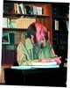
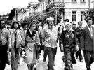
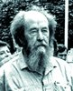
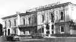
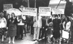
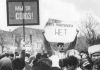
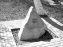
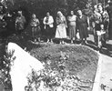

Страницы авторов "Тёмного леса"
Страница журнала "Литературный Кисловодск"
Пишите нам! temnyjles@narod.ru
Новочеркасск! Из роковых городов России. Как будто мало было ему рубцов гражданской войны - посунулся еще раз под саблю.
Новочеркасск! Целый город, целый городской мятеж так начисто слизнули и скрыли! Мгла всеобщего неведения так густа осталась и при Хрущёве, что не только не узнала о Новочеркасске заграница, не разъяснило нам западное радио, но и устная молва была затоптана вблизи, не разошлась - и большинство наших сограждан даже по имени не знает такого события: Новочеркасск, 2 июня 1962 года.
Так изложим здесь всё, что нам удалось собрать.
Не преувеличим, сказав, что тут завязался важный узел новейшей русской истории. Обойдя крупную (но с мирным концом) забастовку ивановских ткачей на грани 30-х годов, - Новочеркасская вспышка была за сорок один год (от Кронштадта и Тамбова) первым народным выступлением - никем не подготовленным, не возглавленным, не придуманным - криком души, что дальше так жить нельзя!
В пятницу 1 июня было опубликовано по Союзу одно из выношенных любимых хрущёвских постановлений о повышении цен на мясо и масло. А по другому экономическому плану, не связанному с первым, в тот же день на крупном новочеркасском электровозостроительном заводе (НЭВЗ) также и снизили рабочие расценки - процентов до тридцати. С утра рабочие двух цехов (кузнечного и металлургического), несмотря на всю послушность, привычку, втянутость, не могли заставить себя работать - уж так припекли с обеих сторон! Громкие разговоры их и возбуждение перешли в стихийный митинг. Будничное событие для Запада, необычайное для нас. Ни инженеры, ни главный инженер уговорить рабочих не могли. Пришёл директор завода Курочкин. На вопрос рабочих "на что теперь будем жить?" этот сытый выкормыш ответил: "Жрали пирожки с мясом - теперь будете с повидлом!" Едва убежали от растерзания и он, и его свита. (Быть может, ответь он иначе - и угомонилось бы.)
К полудню забастовка охватила весь огромный НЭВЗ. (Послали связных на другие заводы, те мялись, но не поддержали.) Вблизи завода проходит ж-д линия Москва-Ростов. Для того ли, чтоб о событиях скорее узнала Москва, для того ли, чтобы помешать подвозу войск и танков, - женщины во множестве сели на рельсы задержать поезда; тут же мужчины стали разбирать рельсы и делать завалы. Размах забастовки - нерядовой, по масштабу всей истории русского рабочего движения. На заводском здании появились лозунги: "Долой Хрущёва!", "Хрущёва - на колбасу!".
К заводу (он стоит вместе со своим посёлком в 3-4 километрах от города за р. Тузлов) в тех же часах стали стягиваться войска и милиция. На мост через р. Тузлов вышли и стали танки. С вечера и до утра в городе и по мосту запретили всякое движение. Посёлок не утихал и ночью. За ночь было арестовано и отвезено в здание городской милиции около 30 рабочих - "зачинщиков".
С утра 2 июня бастовали и другие предприятия города (но далеко не все). На НЭВЗе - общий стихийный митинг, решено идти демонстрацией в город и требовать освобождения арестованных рабочих. Шествие (впрочем, по началу лишь человек около трёхсот, ведь страшно!) с женщинами и детьми, с портретами Ленина и мирными лозунгами прошло мимо танков по мосту, не встретив запрета, и поднялось в город. Здесь оно быстро обрастало любопытствующими, одиночками с других предприятий и мальчишками. Там и сям по городу люди останавливали грузовики и с них ораторствовали. Весь город бурлил. Демонстрация НЭВЗа пошла по главной улице (Московской), часть демонстрантов стала ломиться в запертые двери городского отделения милиции, где предполагали своих арестованных. Оттуда им ответили стрельбой из пистолетов. Дальше улица выводила к памятнику Ленина и, двумя суженными обходами сквера, - к горкому партии (бывшему атаманскому дворцу, где кончил жизнь Каледин). Все улицы были забиты людьми, а здесь, на площади - наибольшее сгущение. Многие мальчишки взобрались на деревья сквера, чтобы лучше видеть.
А горком партии оказался пуст - городские власти бежали в Ростов. Внутри - разбитые стёкла, разбросанные по полу бумаги, как при отступлении в гражданскую войну. Десятка два рабочих, пройдя дворец, вышли на его длинный балкон и обратились к толпе с беспорядочными речами.
Было около 11 часов утра. Милиции в городе совсем не стало, но всё больше войск. (Картинно, как от первого лёгкого испуга гражданские власти спрятались за армию.) Солдаты заняли почтамт, радиостанцию, банк. К этому времени весь Новочеркасск вкруговую был уже обложен войсками, и прегражден был всякий доступ в город или выход из него. (На эту задачу выдвинули и ростовские офицерские училища, часть их оставив для патрулирования по Ростову.) По Московской улице, тем же путём, как прошла демонстрация, туда же, к горкому, медленно поползли танки. На них стали влезать мальчишки и затыкать смотровые щели. Танки дали холостые пушечные выстрелы - и вдоль улицы зазвенели витринные и оконные стекла. Мальчишки разбежались, танки поползли дальше.
А студенты? Ведь Новочеркасск - студенческий город! Где же студенты?.. Студенты Политехнического и других институтов и нескольких техникумов были заперты с утра в общежитиях и институтских зданиях. Сообразительные ректоры! Но, скажем: и не очень гражданственные студенты. Наверно, и рады были такой отговорке. Современных западных бунтующих студентов (или наших прежних русских), пожалуй дверным замком не удержишь.
Внутри горкома возникла какая-то потасовка, ораторов постепенно втягивали внутрь, а на балкон выходили военные, и всё больше. (Не так ли с балкона управления Степлага наблюдали и за кенгирским мятежом?). С маленькой площади близ самого дворца цепь автоматчиков начала теснить толпу назад, к решётке сквера, (Разные свидетели в один голос говорят, что эти солдаты были - нацмены, кавказцы, свежепривезённые с другого конца военного округа, и ими заменили стоявшую перед тем цепь из местного гарнизона. Но показания разноречат: получила ли перед тем стоявшая цепь солдат приказ стрелять, и верно ли, что приказ был не выполнен из-за того, что капитан, принявший его, не скомандовал солдатам, а кончил с собой перед строем. Самоубийство офицера не вызывает сомнения, но не ясны рассказы об обстоятельствах и никто не знает фамилии этого героя совести.) Толпа пятилась, однако никто не ждал ничего дурного. Неизвестно, кто отдал команду, - но эти солдаты подняли автоматы и дали первый залп поверх голов.
Может быть, генерал Плиев и не собирался сразу расстреливать толпу - да события развились сами по себе: данный поверх голов залп пришелся по деревьям сквера и по мальчишкам, которые стали оттуда падать. Толпа видимо взревела - и тут солдаты, по приказу ли, в кровяном ли безумии или в испуге - стали густо стрелять уже по толпе, притом разрывными пулями. (Кенгир помните? Шестнадцать на вахте?) Толпа в панике бежала, теснясь в обходах сквера - но стреляли и в спины бегущих. Стреляли до тех пор, пока опустела вся большая площадь за сквером, за ленинским памятником - через бывший Платовский проспект и до Московской улицы. (Один очевидец говорит: впечатление было, что всё завалено трупами. Но, конечно, там и раненых было много. По разным данным довольно дружно сходится, что убито было человек 70-80. Солдаты стали искать и задерживать автомашины, автобусы, грузить туда убитых и раненых и отправлять в военный госпиталь, за высокую стену. (Еще день-два ходили те автобусы с окровавленными сиденьями.)
Так же, как и в Кенгире, была применена в этот день кино-фотосъёмка мятежников на улицах.
Стрельба прекратилась, испуг прошёл, к площади снова нахлынула толпа и по ней снова стреляли.
Это было от полудня до часу дня. Вот что видел внимательный свидетель в два часа дня: "На площади перед горкомом стоят штук восемь танков разных типов. Перед ними - цепь солдат. Площадь почти безлюдна, стоят лишь кучки, преимущественно молодёжь и что-то выкрикивают солдатам. На площади во вмятинах асфальта - лужи крови, не преувеличиваю, до тех пор я не подозревал, что столько крови вообще может быть. Скамьи в сквере перепачканы кровью, кровавые пятна на песчаных дорожках сквера, на побеленных стволах деревьев. Вся площадь исполосована танковыми гусеницами. К стене горкома прислонён красный флаг, который несли демонстранты, на древко сверху наброшена серая кепка, забрызганная бурой кровью. А по фасаду горкома - кумачёвое полотнище, давно висящее там: "Народ и партия - едины!"
Люди ближе подходят к солдатам, стыдят и проклинают их: "Как вы могли?!" "В кого вы стреляли?" "В народ стреляли!" Они оправдываются: "Это не мы! Нас только что привезли и поставили. Мы ничего не знали".
Вот расторопность наших убийц (а говорят - неповоротливые бюрократы): тех солдат уже успели убрать, а поставить недоумевающих русских. Знает дело генерал Плиев...
Постепенно, часам к пяти-шести, площадь снова наполнилась народом. (Храбрые новочеркассцы! По городскому радио всё время: "граждане, не поддавайтесь на провокацию, расходитесь по домам!" Тут автоматчики стоят, и кровь не смыта - а они снова напирают.) Выкрики, больше - и снова стихийный митинг. Уже известно, что в город прилетело (да наверно - еще к первому расстрелу?) шесть высших членов ЦК, в том числе, конечно, Микоян (специалист по будапештским ситуациям), Фрол Козлов (остальных называют неточно). Они остановились, как в крепости, в здании КУККС, бывшего кадетского корпуса. И делегация молодых рабочих НЭВЗа послана к ним рассказать о происшедшем. В толпе гудят: "Пусть Микоян приедет сюда! Пусть сам посмотрит на эту кровь!" Нет, Микоян не приедет. Но вертолёт-дозорщик низко облетает площадь часов около шести, рассматривает. Улетел.
Скоро из КУККСа возвращается делегация рабочих. Это согласовано: солдатская цепь пропускает делегатов и в сопровождении офицеров их выводят на балкон горкома. Тишина. Делегаты передают толпе, что были у членов ЦК, рассказывали им про эту "кровавую субботу", и Козлов плакал, когда услышал, как от первого залпа посыпались дети с деревьев. (Кто знает Фрола Козлова - главу ленинградских партийных воров и жесточайшего сталиниста? - он плакал!..) Члены ЦК пообещали, что расследуют эти события и сурово накажут виновных (ну, так же и в Особлагах нам обещали), а сейчас необходимо всем разойтись по домам, чтобы не устраивать в городе беспорядков.
Но митинг не разошёлся! К вечеру он густел еще более. Отчаянные новочеркассцы! (Есть слух, что бригада политбюро в этот вечер приняла решение выселить всё население города поголовно! Верю, ничего б тут не было дивного после высылок народов. Не тот же ли Микоян и тогда был около Сталина?)
Около 9 вечера попробовали разогнать народ танками от дворца, Но едва танкисты завели моторы, люди облепили их, закрыли люки, смотровые щели. Танки заглохли. Автоматчики стояли, не пытаясь помочь танкистам.
Еще через час появились танки и бронетранспортёры с другой стороны площади, а на их броне сверху - прикрытие автоматчиков. (Ведь у нас какой фронтовой опыт! Мы же победили фашистов!) Идя на большой скорости (под свист молодёжи с тротуаров, студенты к вечеру освободились), они очистили проезжую часть Московской и Платова.
Лишь около полуночи автоматчики стали стрелять трассирующими в воздух - и толпа стала расходиться.
(Сила народного волнения! Как быстро ты меняешь государственную обстановку! Накануне - комендантский час и так страшно, а вот весь город гуляет и свистит. И неужели под корою полустолетия так близко это лежит - совсем другой народ, совсем другой воздух?)
3 июня городское радио передало речи Микояна и Козлова. Козлов не плакал. Не обещали уже и искать виновников (верхо'вых). Говорилось, что события спровоцированы врагами и враги будут сурово наказаны. (Ведь с площади люди уже разошлись.) Еще сказал Микоян, что разрывные пули не приняты на вооружение советской армии - следовательно их применяли враги.
(Но кто же эти враги?.. На каком парашюте они спустились? Куда они делись? - хоть бы увидеть одного! О, как мы привыкли к дурачению! - "враги", и как будто что-то понятно... Как бесы для средневековья...)
Тотчас же обогатились магазины сливочным маслом, колбасой и многим другим, чего давно здесь не было, а только в столицах бывает.
Все раненые пропали без вести, никто не вернулся. Напротив, семьи раненых и убитых (они же искали своих!..) были высланы в Сибирь. Так же и многие причастные, замеченные, сфотографированные. Прошла серия закрытых судов над участниками демонстрации. Было и два суда "открытых" (входные билеты - парторгам предприятий и аппарату горкома). На одном судили 9 мужчин (к расстрелу) и двух женщин (к пятнадцати годам).
Состав горкома остался прежним.
В следующую субботу, после "кровавой", радио объявило: "рабочие электровозостроительного дали обязательство досрочно выполнить семилетний план".
...Если б не был царь слабак, догадался бы и он 9-го января в Петербурге ловить рабочих с хоругвями и лепить им бандитизм. И никакого бы "революционного движения" как не бывало.
|  |  |  |
...Это было 2 июня, ровно 27 лет назад. По радио объявили прямую трансляцию концерта духовых оркестров из городского парка Новочеркасска. Марчевский не поверил своим ушам. Покрутил ручку приемника, прибавил звук. Оркестр радостно звенел медью.
Марчевский вышел из дома, он жил прямо напротив городского парка. На улице стоял танк. Ни одного прохожего. Только где-то за углом слышались мерные шаги военного патруля. Тихо, безлюдно и в парке.
Марчевский вернулся домой. По радио продолжался концерт. "От всего этого можно сойти с ума", - подумал он и выключил приемник. Закрыл глаза, но никак не мог отрешиться от пережитого, увиденного сегодня: стрельба, сухой треск стекол, лопнувших после выстрела танка.
Заканчивался второй день лета 1962 года...
Инженер Геннадий Юлианович Марчевский и сегодня живет в Новочеркасске, работает в вычислительном центре политехнического института. О трагических событиях, свидетелем которых оказался, он говорит вслух второй раз в жизни. Первый раз, еще тогда, 27 лет назад, поделился впечатлениями с соседями. И вскоре его "разбирали" в парткоме за распространение вредных слухов. Исключили из комсомола. Не выдавали диплом после защиты. Очень долго его преследовали трудности с устройством на работу. Таков был урок. С тех пор до недавнего разговора с нами об этом молчал.
Были и те, кто, несмотря ни на что, молчать не хотели. Все эти годы пытался предать случившееся гласности, добиться объективного разбирательства Герой Советского Союза, генерал-лейтенант (сейчас в отставке) Матвей Кузьмич Шапошников. Именно за это, как "за действия, несовместимые с пребыванием в рядах партии", он был в 1968 году исключен из членов КПСС. Восстановлен лишь недавно...
Но и самый жесткий запрет всё-таки бессилен против правды. Раньше или позже тайное становится явным. Лучше, конечно, раньше.
...Звенящей медью оркестров тогда, в 1962-м, пытались перекрыть не только трагедию, случившуюся в небольшом Новочеркасске, но и драматизм происходящих в стране процессов. Уже миновал пик "оттепели". После оживления экономики, роста производства продуктов питания все отчетливее обозначались признаки спада. Начались перебои с продовольствием. На глазах росли у магазинов очереди за мясом и маслом.
Чем тревожнее становилась ситуация, тем громче звучали фанфары, обещания быстрых успехов, скорого наступления коммунизма. Разрешалось куда больше, чем в сталинские времена. Но разрешалось сверху. Без включения широких слоев народа не могло быть гарантий на то, что не будет запрещено завтра. Самое либеральное управление обществом - еще не самоуправление общества. Единственным реальным правом гражданина, коллектива, народа участвовать в решении общегосударственных проблем по-прежнему оставалось право "единодушно" поддерживать и одобрять.
В октябре 1961-го было обещано, что "советский народ уже в 1962 году должен почувствовать реальные плоды осуществления тех мероприятий по сельскому хозяйству, которые намечены XXII съездом партии". Но резервы "скачков" к этому времени оказались исчерпаны. Вместо "реальных плодов" 1 июня объявили о повышении цен на мясомолочные продукты.
Бурный прилив энтузиазма постановление вызвало только в газетных откликах. В Новочеркасске - городе рабочих и студентов - эту меру восприняли крайне болезненно. Недовольство копилось здесь годами.
Рабочие давно жаловались, что в заводских столовых скверно кормят. А сколько семей мучилось в бараках, снимало частные квартиры за 30-50 рублей в месяц - очень дорого по тем временам. Для студентов со скудной стипендией - и вовсе не по карману, общежитий же на всех не хватало. И заводы почти не строили жилья. На крупнейшем предприятии города - Новочеркасском электровозостроительном заводе стало нормой ежегодное снижение расценок. Причем волевым путем, не всегда обоснованно. Но всегда - без учета мнения рабочих.
Люди устали от пренебрежения к их интересам. От того, что все решения - на уровне цеха или на уровне страны - принимаются за их спиной. И потому почти одновременное снижение расценок и повышение цен к лету 62-го больно ударило не только по карману, но и по самолюбию.
Вспоминает И. АРТЕМОВ, бригадир Новочеркасского электровозостроительного завода, делегат XIX партконференции:
- 1 июня 1962 года я опоздал на пятиминутку. Поэтому отправился прямо в свой сталелитейный цех, переоделся, включил машину и начал набивать опоку. Тут подходят ребята: "Ты чего работаешь?" - "А что же мне делать?" - отвечаю. "Да, говорят, бастовать надумали. Пошли, разговор с директором будет". Собрались у беседки рядом с цехом. Рабочие стали спрашивать у директора Курочкина, как же теперь сводить концы с концами. А он ответил: "Ничего, на пирожках с ливером перебьетесь". Грубо так сказал, обидно для рабочих. Со всех цехов люди стали стягиваться к заводоуправлению. Когда я пришел на площадь, там уже митинговали.
...Как знать, может быть, на том разговоре у беседки и завершились бы "новочеркасские события", найди тогда директор нужные слова. Не сумел.
Но неужели для этого какое-то особое умение требовалось - выслушать, по-человечески поговорить, понять: чего же хотят люди? Не приучен был к этому тогдашний начальник - вот в чем дело, и не только директор Курочкин.
Не обсуждать решения свыше, а выполнять. Не допускать несогласия снизу, подчинять директиве массы (само это слово, широко распространенное, характерно - не люди, а массы). Утвержденные в сталинские времена, эти законы административно-командной системы оставались незыблемыми. Только вот люди становились другими. Всего-то 9 лет прошло после смерти Сталина. А "оттепель" успела разбудить в человеке чувство собственного достоинства.
Издевательский окрик вместо разговора стал спичкой, зажженной возле порохового погреба. Сам Б.Н. Курочкин, ныне пенсионер, предпочитает об этом не вспоминать. Он отказался от встречи с нами, сославшись на болезнь. Зная о том, что тогда произошло дальше, его можно понять.
Вспоминает С. ЕЛКИН, начальник отдела НЭВЗа, в 1962-м - главный инженер завода:
- Кто-то включил заводской гудок. Люди бросали работу, собирались на площади у заводоуправления. Обстановка накалялась. В разгар митинга на заводе появился первый секретарь Ростовского обкома партии Басов. Но повел он себя, на мой взгляд, неправильно. Начал примерно так: да я сам из беспризорников. Стал на свою трудную жизнь жаловаться. А сам-то дядя солидный, холеный. Хулиганы бросили в его сторону бутылки. Мы решили, что Басова надо отправить, помогли ему вылезти из окна к машине, и он уехал.
...Главное, что заботило в тот момент руководителей, как утихомирить людей, вернуть на рабочие места, не допустить широкой огласки. Ведь за это по головке сверху не погладят. Когда стало ясно, что ситуация окончательно вышла из-под местного контроля и придется сообщать в Москву, больше всего пугала политическая окраска событий.
Рабочие, отчаявшись найти понимание на месте, требовали, в общем-то, немногого: передать свое мнение правительству. Сообщить, что они недовольны своим положением, прекращают в знак протеста работу. Это требование казалось немыслимым!
Куда как проще и безболезненнее для местного начальства было бы теперь уже представить все это хулиганскими выходками, подтолкнуть людей к нарушениям правопорядка. Такие попытки были. Сейчас уже трудно, но, наверное, все-таки можно, выяснить, кто стоял за провокацией рабочих на бесчинства, погромы. Откуда полетели вдруг пустые бутылки, откуда зазвучали крики "бей всех, кто в чистом". Уже стали завязываться первые стычки, кого-то толкнули, кого-то ударили...
Но тем не менее рабочие быстро сумели провокационные настроения погасить. Сошлись на том, чтобы утром с красными флагами, портретами Ленина идти всем вместе к горкому партии - заявить свои требования. Послали делегации на другие предприятия города с призывом поддержать их.
А машина, заряженная на подавление "беспорядков" уже работала полным ходом. Ранним утром арестовали наиболее активных ораторов. В город ввели войска.
Вспоминает Герой Советского Союза, генерал-лейтенант в отставке М.К. ШАПОШНИКОВ, в 1962-м - первый заместитель командующего войсками Северо-Кавказского военного округа:
- Руководство частями, которые сосредотачивались к району Новочеркасского электровозостроительного завода, было возложено на меня. А командующий войсками СКВО генерал армии Плиев взял на себя непосредственное руководство частями, находившимися в черте Новочеркасска. С самого начала я был против того, чтобы войска нашего округа, да еще с оружием и боеприпасами, противопоставлять рабочим завода и толпе горожан. Мои предостережения действий не возымели.
Я принял решение и приказал своим частям: автоматы и карабины разрядить, боеприпасы сдать под ответственность командиров рот, боеприпасы без моей команды не выдавать.
По радио доложил генералу Плиеву, что многотысячная колонна рабочих идет с красными знаменами к центру города.
- Задержать, не пропускать! - прокричал он в микрофон.
- Голова колонны уже прошла мост через реку Тузлов; да и сил у меня не хватит, чтобы задержать столь многомощную колонну.
- Высылаю в ваше распоряжение танки.
- Я не вижу перед собой такого противника, которого следовало бы атаковать танками, - твердо ответил я.
На этом наш диалог прервался.
Мы с помощником помчались на "уазике" к центру города, но не доехали до площади метров 100, как услышали массированный огонь из автоматов... В результате применения оружия было убито 22 или 24 человека, в том числе мальчик школьного возраста, ранено 30 человек. На следующее утро я узнал, что убитых тайком захоронили.
Вспоминает А. СИМОНОВ, методист подготовительных курсов при НПИ, в 1962-м - преподаватель заочной школы при горотделе внутренних дел:
- У горотдела собралась целая толпа. Требовали освободить арестованных утром людей. Наконец под напором распахнулись двери, и люди хлынули в горотдел. Раздались выстрелы, и все побежали обратно.
Шум переместился на площадь перед горкомом партии. Я пришел туда, когда солдаты открыли огонь из автоматов. Началась паника. Люди постарше, видимо, фронтовики, падали и ползли по площади по-пластунски.
Что было дальше, помню плохо. Долго пытались смыть кровь с площади. Сначала пожарной машиной, потом еще какой-то - со щётками, и, наконец, пригнали каток - заасфальтировали всё толстым слоем.
Вспоминает Л. ФЕСЕНКО, доцент НПИ:
- Когда я услышал автоматные очереди, то сразу рванул на площадь. Детское любопытство подтолкнуло - мне ведь тогда всего пятнадцать было. Сцена была просто ужасная. Старинная чугунная ограда повалена. Все бегут. Побежал и я. Возле парикмахерской слышу крики: "Парикмахершу убили!" Она в это время работала, и шальная пуля попала в нее. Вдруг шум: по улице идет танк. Он остановился совсем рядом, башня сделала полный круг: и раздался оглушительный выстрел - холостой. Огромная витрина магазина вывалилась внутрь, вылетели стекла и в противоположном здании библиотеки, и в других домах до самого начала проспекта.
Вечером и всю ночь из окна нашего дома, выходящего к тыльной стороне горбольницы, я слышал крики - наверное, это родственники погибших и раненых искали своих. К утру все стихло. Улицы патрулировали солдаты на бронетранспортерах.
Диалога на площади перед горкомом не было. Вместо руководителей города, которые попрятались в надежном месте, людей ждали войска с приказом "применять оружие". С самых первых минут после трагедии было сделано всё, чтобы скрыть правду, вытравить ее из памяти людей, запереть в сейфах, которые с большим скрипом открываются и сейчас.
Сразу же широко распространились слухи: "Это все дело рук западных спецслужб", "В толпе у горкома были одни уголовники, они побили все стекла на центральной улице".
...На второй день в город приехали члены Президиума ЦК КПСС Ф.Р. Козлов, А.И. Микоян. Они встречались с делегатами бастующих. Микоян выступил по местному радио, призывал вернуться на работу. Чуть позже с участием Микояна, Козлова, секретаря ЦК ВЛКСМ С. Павлова состоялись встречи с коллективом политехнического института, заседание городского партийного актива. И уже тогда на любые слова о выстрелах на площади было наложено "табу"...
Сразу после трагических событий заполнились продуктами прилавки новочеркасских магазинов. Энергичнее стали решаться вопросы с жильем, улучшением быта горожан.
В августе в Новочеркасске состоялось открытое судебное заседание судебной коллегии Верховного суда РСФСР. На нем было рассмотрено дело 14 наиболее активных "организаторов" беспорядков. Семь человек приговорили к расстрелу.
На одноэтажной, почти деревенской улице Новочеркасска стоит очень скромный дом. Здесь жил рабочий электродного завода Андрей Андреевич Коркач. Здесь и сейчас живет его мать, Феодосия Илларионовна, дочь Элеонора Андреевна, внуки. Коркач 1 июня 1962 года встретил на электродном заводе делегацию электровозостроителей, поддержал их призыв и агитировал рабочих присоединиться к забастовке. На суде его обвинили в том, что он "клеветал" на плохое материальное положение трудящихся, тогда как сам живет богато, "даже мотоцикл имеет". Его приговорили к расстрелу с конфискацией лично ему принадлежащего имущества. И сейчас напоминанием о тех днях стоит во дворе полуразвалившийся флигель - заброшенный, ничей - конфискованный...
Чуть позже дела других участников событий рассмотрел и Ростовский областной суд. Обвинение было построено не столько на фактах, сколько на ругани и ярлыках. А ведь многие из осужденных по новочеркасскому делу давно вернулись в родной город, и это темное пятно лежит на них по сей день. Мы не вправе утверждать, что все обвинения абсолютно беспочвенны. Но пересмотр тех уголовных дел, тщательный, беспристрастный и справедливый их анализ - наш долг перед лицом правды.
Вспоминает С. ОГАНЕСОВ, юрист, член партии с 40-летним стажем:
- Одна версия представляет происшедшее событие как вылазку уголовных, бандитских элементов. По моему мнению, это было стихийным выступлением людей, недовольных своим материальным положением.
Мой подзащитный Гончаров - совсем мальчишка, он оказался в гуще событий, скорее всего, из любопытства. Но его вынесло в первые ряды, и там он был зафиксирован на фотопленку. Убедительных доказательств его вины как организатора беспорядков не было. И тем не менее он был приговорен к десяти годам лишения свободы. Подсудимых выбирали скорее не по их конкретным действиям, а визуально, кого больше заметили, выбирали и тех, у кого была судимость в прошлом. На мой взгляд, стремились скомпрометировать участников волнений, создать видимость бандитского заговора...
Размышляя о трагедии Новочеркасска 62-го, все время держишь в уме трагически противоречивую фигуру тогдашнего политического лидера - Н.С. Хрущева. Уже близок был к завершению период его руководства. Но не только внезапная отставка прервала "оттепель". Кризис начал развиваться гораздо раньше. Новочеркасские события - тому подтверждение.
Он бился за резкое увеличение производства зерна, вкладывал огромные средства в гигантское расширение посевов. Но именно в его время страна впервые стала закупать зерно за рубежом.
Его решения были нацелены на расширение кормовой базы в животноводстве и увеличение производства мясомолочных продуктов. Но как раз в начале 60-х возникли серьезные перебои со снабжением этими продуктами. И палочка-выручалочка - кукуруза, с помощью которой намечалось кормовую проблему решить, была позже высмеяна, предана анафеме. Да так, что и до сих пор мы пожинаем плоды возникшего в итоге кормового дисбаланса - покрываем недостаток изгнанной с полей кукурузы ценной пшеницей.
Что тут - наша знакомая кампанейщина, способная довести до абсурда, загубить самое здравое решение? Безудержность исполнителей-бюрократов, заботившихся не о деле, а об "охвате", "проценте перевыполнения"? Или политическая борьба, в которой компрометация политики Хрущева и его самого стала главным средством?
- Я убежден, - говорит доктор экономических наук, профессор И.Г. Шилин, - что экономическая политика Хрущева искажалась и дискредитировалась вполне сознательно, целенаправленно. Упор делался на искажение разумных идей при их реализации, разжигание в народе недовольства реформами. И - что очень важно - на необоснованность планирования. Мне довелось работать в Госплане. И я лично сталкивался с попытками внедрения ненаучных, вредных методов расчетов при планировании, попытками дестабилизации экономики. К несчастью, эти попытки при Хрущеве имели успех. Семилетний план, по глубокому моему убеждению, был главным ударом сил торможения. Хрущеву сумели навязать этот абсолютно несбалансированный план. Принятие его стало последним шагом к провалу. И повышение цен на продукты в 1962 году - плата за принятие этого плана. Хотя самоупорядочение цен было объективно необходимо. Но в условиях резкой несбалансированности экономики в целом и цен в частности, эти меры ничего хорошего дать не могли.
...Версию о том, что противникам Хрущева удалось сознательно скомпрометировать его в глазах общественного мнения, подготовить отставку, торпедируя исподволь важнейшие идеи лидера, умело используя его же промахи и противоречия, доказать документально непросто. Если это и так, то главным своим противником был тем не менее сам Никита Сергеевич. Сохраняя авторитарный метод руководства, Хрущев полагался прежде всего на себя. Но в одиночку не справиться с системой, даже занимая самый высший пост.
Больше всего оснований бороться с Хрущевым было у сторонников и лидеров системы административно-бюрократической. Именно в её кровных интересах было поэтому тем реформам энергично сопротивляться, добиваться всеми способами дестабилизации экономической и политической. Провоцировать кризисы. Эти цели и интересы были противоположны не только хрущевским, но интересам тех же рабочих НЭВЗа.
Трагический парадокс.
Объективно и Хрущеву, и нэвзовцам в том конфликте противостоял общий противник. Но вышли на улицы рабочие с антихрущевскими лозунгами. И на руку эти события оказались как раз тем, кто всеми средствами стремился приблизить отставку лидера, подорвать его авторитет.
Вполне понятно, что вся социально-экономическая политика того периода с ее достижениями и провалами отождествлялась только с ним, только с его именем. И все свои беды нэвзовцы связывали в первую очередь с личностью Хрущева.
Правда о новочеркасских событиях нужна нам сегодняшним. Это ясно сейчас многим.
В середине мая 1962 года первый заместитель командующего Северо-Кавказским военным, округом генерал-лейтенант Матвей Кузьмич Шапошников проводил на Кубани сборы комсостава округа. В двадцатых числах мая командующий СКВО генерал И.А. Плиев получил шифровку, в которой было сказано: поднять войска по боевой тревоге и сосредоточить их в районе Новочеркасска.
- В конце мая, то есть ещё до первого июня? - переспрашиваем мы у Матвея Кузьмича.
Он отвечает, что да, помнит точно. Шифровка, как он понял, шла от Хрущева через Малиновского, бывшего в те годы министром обороны СССР.
- Для меня, военного человека, когда говорят, что надо поднять войска по боевой тревоге, то есть с оружием и боеприпасами, стало ясно - это не для борьбы со стихийными бедствиями. Значит, там что-то случилось. Плиев уехал раньше, а я, завершив сборы, поехал в Новочеркасск, по дороге заскочив домой в Ростов, переодеться.
Спрашиваем генерала, каким он увидел Новочеркасск. По его словам, в городе было все спокойно, он только обратил внимание на военные патрули. Плиев сообщил: необходимо выехать в район электровозостроительного завода и принять командование над прибывающими туда частями. Перед тем как ехать на завод, командующий приказал генералу Шапошникову доложить Козлову и Микояну.
- То есть, - снова переспрашиваем мы, - два члена Президиума ЦК находились в Новочеркасске ещё до первого июня?
- Да, - отвечает М.К. Шапошников. - Я их нашел в медпункте танковой дивизии, где им отвели резиденцию. Когда я вошел на территорию военного городка, обратил внимание, что он внутри по всему периметру окружен танками и автоматчиками, и не мог не удивиться: от кого же так охраняют двух высоких гостей из Москвы?
Представившись Козлову и Микояну, я тут же высказал опасение: войска вышли с боеприпасами, причем не только стрелки, но и танкисты. Может произойти великая беда. Микоян промолчал, а Козлов грубо оборвал меня: "Командующий войсками генерал Плиев получил все необходимые указания". Я был убежден, что совершается ошибка и потому предложил Плиеву, члену Военного Совета Иващенко, всем нам вместе послать шифровку на имя Хрущева с просьбой, чтобы у войск, сосредоточенных в районе Новочеркасска, изъять хотя бы боеприпасы. Генерал Плиев поднял вверх указательный палец: "Над нами члены Президиума ЦК КПСС". Генерал М.К. Шапошников, прибыв к заводу, вокруг которого уже сосредоточивались войска, своей властью приказал: "Автоматы и карабины разрядить, боеприпасы сдать под ответственность командиров рот". То же самое относилось к танковым боеприпасам.
- Что он увидел на заводе?
- Рабочие бурлили по цехам, - отвечает генерал, - но митингов еще не было. Разговоры шли только о снижении расценок, постановление о повышении цен еще не было опубликовано.
- Приезжали ли местные руководители поговорить с рабочими?
- Они вели себя, как трусливые зайцы, - говорит генерал. - Двое приехали, но когда рабочие рванулись к ним, чтобы высказать свои претензии, они удрали через чердаки... Для того чтобы обратить на себя внимание, рабочие остановили движение на железной дороге.
- Зачем?
- Они хотели, чтобы Москва знала о них, не подозревая о том, что два члена Президиума ЦК находятся всего в нескольких километрах от них под охраной танков и автоматчиков.
Первого числа, по словам генерала Шапошникова, рабочие вышли из цехов и заполнили заводскую площадь. Они хотели встретиться с заводским начальством, но двери заводоуправления были забаррикадированы. Митинг продолжался целый день.
А потом наступило второе июня.
"Около одиннадцати часов распахнулись заводские ворота, и толпа в семь-восемь тысяч человек с красными знаменами направилась в сторону Новочеркасска. Я подошел к рабочим и спросил: куда вы идете? Один из них ответил: "Товарищ генерал, если гора не идет к Магомету, то Магомет идет к горе". По рации я доложил генералу Плиеву о том, что рабочие идут к центру города. "Задержать, не допускать!" - услышал голос Плиева. "У меня не хватит сил, чтобы задержать семь-восемь тысяч человек", - ответил я. "Я высылаю в ваше распоряжение танки. Атакуйте!" - последовала команда Плиева. Я ответил: "Товарищ командующий, я не вижу перед собой такого противника, которого следовало бы атаковать нашими танками". Плиев раздраженно бросил микрофон. Предчувствуя недоброе, я попытался на своем "газике" перегнать колонну. Навстречу мне попался генерал Пароваткин, которого я посылал раньше за устными указаниями Плиева. "Командующий приказал применить оружие",- сказал он мне. "Не может быть!" - воскликнул я. Тогда Пароваткин протянул мне блокнот, развернул его, и я увидел: "Применить оружие". Мы с Пароваткиным быстро вскочили в "газик", чтобы успеть обогнать толпу и не допустить кровавой акции. Но не доехав метров четыреста до площади перед горкомом партии, услышали массированный огонь из автоматов".
- Матвей Кузьмич, сколько, по вашему мнению, было убитых?
- Двадцать четыре человека, из них один школьник, тридцать было ранено. Я, помню, сказал генералу Пароваткину: "Знаешь что, давай сейчас поедем к Козлову и Микояну и потребуем как очевидцы, чтобы на этой площади судили всех тех, кто применил оружие". "Опомнитесь, Матвей Кузьмич, - ответил Пароваткин, - там же нас не поймут".
Мы спросили генерала, что было бы, если бы он подчинился приказу и танки, стоявшие на мосту через реку Тузлов, атаковали толпу. Он ответил: "Погибли бы тысячи".
Когда он ехал на завод, то в его "газик" полетел булыжник. Попал в плечо, сорвал левый погон. Генерал высунулся из машины и сказал тому, кто кидал: "Дурак ты!" И поехал дальше.
- Когда я узнал, что собирается городской партийный актив, то решил на нем выступить и сообщил об этом члену Военного Совета. Я хотел сказать о том, что мы не должны были этого делать. Я хотел напомнить всем, что даже в Программе нашей партии записано: с точки зрения внутренних условий наше общество не нуждается в армии. Доказать им, что это беззаконие и нарушение всех человеческих норм. Спросить руководителей КГБ и МВД, почему если мы были в форме, то они переодели своих людей в грязные комбинезоны. Я хотел сказать о многом, но на актив меня не пригласили. Тогда я решил писать письмо и попросил адъютанта найти мне тома Ленина, в которых он дает оценку Ленскому расстрелу и Кровавому воскресенью.
- Кому письмо-то, Матвей Кузьмич? В ЦК? Хрущеву?
- В том-то и дело, я понял, что писать некому, по крайней мере по этим адресам.
ЧЕРЕЗ некоторое время в Москву в СП СССР на улицу Воровского начали приходить письма со странным адресом на конверте: "Советским писателям" и с не менее странной подписью "Неистовый Виссарион":
"...Партия превращена в машину, которой управляет плохой шофер, часто спьяну нарушающий правила уличного движения. Давно пора у этого шофера отобрать права, и таким образом предотвратить катастрофу..."
"...Для нас сейчас чрезвычайно важно, чтобы трудящиеся и производственная интеллигенция разобрались в существе политического режима, в условиях которого мы живем. Они должны понять, что мы находимся под властью худшей формы самодержавия, опирающегося на огромную бюрократическую и вооруженную силу".
"Нам необходимо, чтобы люди начали мыслить, вместо слепой веры, превращающей нас в живые машины. Наш народ, если сказать коротко, превращен в политически бесправного международного батрака, каким он никогда не был".
Письма в СП СССР приходили одно за другим, и можно лишь представить ту реакцию, которую они вызывали - нет, не у "советских писателей", до которых они, видимо, не доходили, а у тех организаций, куда письма, как потом выяснится, исправно направлялись из СП СССР.
На что надеялся Герой Советского Союза, генерал-лейтенант, первый заместитель командующего Северо-Кавказским военным округом (а ему еще предстояло полтора года пробыть и. о. командующего округом), то есть человек, стоящий на высокой ступени советской военной иерархии, занимаясь несвойственным для генерала делом? Что заставляло его день ото дня заполнять личные дневники, размышляя не столько о военном искусстве, сколько о трудной науке гражданственности (кстати, дневники, как и письма - правда, не все, - были возвращены генералу только в этом году)?
Что заставляло? Думаем, ненависть к духовному рабству, которое административная система культивировала в поколениях, отнимая у человека человеческое.
Ну, а на что надеялся? Наверное, надеялся на сегодняшний день, на то, что мы называем перестройкой.
Могло ли все это долго продолжаться?
"Постепенно я начал сталкиваться с некоторыми странностями, - вспоминает Матвей Кузьмич Шапошников. - Письма, которые приходили ко мне, как правило, оказывались в поврежденных конвертах, и мои адресаты начали жаловаться мне на то, что в таких же поврежденных конвертах приходят и мои письма к ним. Помню, я пригласил к себе начальника особого отдела округа и попросил разобраться, кому понадобилось следить за моей перепиской. Начальник особого отдела смутился и через несколько дней сообщил мне, что конверты повреждены из-за неаккуратности почтовых работников".
В июне 1966 года шестидесятилетнего генерала Шапошникова увольняют в запас. В те дни он записал в дневнике: "Сегодня получил ответ на свое письмо Малиновскому Р.Я., которое я писал 8.6.66 года. Вот его резолюция на письме: "Тов. Шапошников М.К. Не смогли устроить Вас со службой, поэтому и состоялось Ваше увольнение. Большего чего-либо сделать не могу. Малиновский".
В конце августа 1966 года М.К. Шапошников вместе с женой возвращался на своем "Запорожце" из Подмосковья в Ростов. При выезде из Москвы машину остановили. "В чем дело? - удивился генерал. - Что я нарушил?" Офицер ГАИ ответил: "Ничего, мы только проверим документы". Рядом с офицером ГАИ стояли несколько почему-то ухмыляющихся штатских.
- Обычно-то мы едем через Харьков, а в этот раз я решил через Воронеж, чтобы срезать 150 километров. Не успел выехать из Воронежа, как дорогу перекрыли несколько машин с мигалками. "Товарищ генерал, вы откуда и куда?" Я снова удивился: я всегда езжу в форме и со звездочкой Героя. Проверили документы - отпустили. Но перед Ростовом снова тормозят. "Опять будете спрашивать, откуда и куда еду? Надоели". Молодой офицер ГАИ смутился и опустил глаза.
Въезжаю в свой двор, но арка, через которую я всегда езжу, перекрыта, зачем-то вырыта яма. И тут только замечаю, что не только дом, но и квартал оцеплен. Первый, кого я вижу во дворе, - начальник особого отдела округа и с ним еще человек двенадцать в форме и в штатском. Подходит ко мне: "Здравствуйте, Матвей Кузьмич, машину ставьте вот сюда и вылезайте". Только мы с женой вылезли, машину тут же начали обыскивать, возможно, в надежде найти какую-то подпольную типографию. Поднимаемся по лестнице, и над моей квартирой, и под моей на площадках стоят странного вида молодые люди. Один из замков оказывается сломанным. Еле вошли в квартиру. Мне предъявляют ордер на обыск. Спрашиваю начальника особого отдела: откуда начнете искать? Тот мгновенно указывает на кабинет, садится за мой стол и открывает именно тот ящик, где лежит мой личный архив, в том числе на самом верху рукописи писем "Неистового Виссариона".
- Плохой же вы конспиратор, Матвей Кузьмич.
- А я ничего и не собирался прятать...
Я человек очень аккуратный и, бросив взгляд в ящик стола, понимаю, что его уже внимательно осматривали. Все бумаги перевернуты. Там же находят и переписанное мной письмо-воззвание по поводу новочеркасских событий, которое попало ко мне еще в 1962 году. Объявили, что арестовывать меня не будут, взяли подписку о невыезде. После ухода жена подняла ковер в нашей спальне и увидела, что под ним просверлены два отверстия в стене и в них вставлены трубочки. Техника у них тогда еще, видимо, была никудышной.
М.К. Шапошникову было предъявлено обвинение по статье 70 УК РСФСР, - в антисоветской агитации и пропаганде. Лишь после его обращения к Ю.В. Андропову дело было прекращено, но - не по реабилитирующим основаниям. И потому все материалы были переданы в партийную комиссию при Ростовском обкоме партии. 26 января 1967 года тогдашний первый секретарь обкома партии И.А. Бондаренко отобрал у генерала Шапошникова партийный билет.
Конечно, он потом писал и писал. Он писал. Он писал в ЦК, в прокуратуру, на съезды партии. Он рассказывал о своей судьбе рабочего паренька, ставшего военным, ходившего в танковые атаки, получившего Героя в тяжкие фронтовые годы. Он писал про трагедию в Новочеркасске, про время - прошлое и будущее. Тома копий писем и ответов на них накопились у него за двадцать лет... Свою судьбу он связал с событиями в Новочеркасске. Он, как человек военный, осознавал необходимость порядка и дисциплины (да и сейчас, в наше митинговое время, мы не можем принимать за демократию разгул стихии). Но он не мог согласиться с такими методами достижения порядка. К народу надо прислушиваться, а не глушить его голос ревом танковых двигателей. Он не напоминал свои собственные слова: "Я не вижу перед собой такого противника, которого бы следовало атаковать нашими танками". Наоборот, он писал, обращаясь уже к XXVII съезду партии: "Что же касается меня самого, то я и тогда, и поныне продолжаю себя казнить за то, что в июне 1962 года не сумел помешать кровавой акции".
Может быть, в этих словах и заключена та самая строгая самооценка, которой так часто не хватает нам всем.
В МАЕ 1967 года генерал Шапошников записал в своем дневнике: "Лично я далек от того, чтобы таить обиды или злобу на носителей неограниченного произвола. Я только сожалею о том, что не умел по-настоящему бороться с этим злом. В схватке с произволом и самодурством у меня не хватило умения вести смертельный бой. В борьбе с распространенным и укоренившимся в армейских условиях злом, каковым является произвол самодуров, подлость и лицемерие, у меня не оказалось достаточно эффективного оружия, кроме иллюзорной веры в то, что правда, вот так, сама по себе, победит и справедливость восторжествует"...
Сейчас Матвею Кузьмичу Шапошникову идет 83-й год. Нет в нем старости. Он ничего не забыл. Он ничего не хочет забывать.
Обстоятельства могут оказаться сильнее народа, но сильнее одного человека они могут и не стать. Пример генерала Шапошникова у нас перед глазами.
Ростов-на-Дону - Москва
Их уже не вернёшь, павших и убиенных во время печально памятных событий, происшедших в этом южном городе в первых числах июня 1962 года. Но если применимы к данному случаю слова известного русского полководца о том, что войну нельзя считать законченной, пока не захоронен, не предан земле последний ее солдат, - то и события те - словно незаживающая рана.
Итак, расстрелянные и погибшие во время демонстрации были тайно, под покровом ночи захоронены милицией в разных местах Ростовской области. Дабы не вызвать новой вспышки народного гнева. Дабы спокойно спалось местным властям. И все эти долгие годы родные и близкие тех людей мучились в догадках - где лежит их отец, брат, муж? Вот только одно письмо несчастной вдовы Надежды Дьяконовой. Оно приведено в недавно вышедшем в Новочеркасске сборнике "Крытый двор", где неутомимые следопыты-общественники собрали ряд интересных материалов в связи с событиями в Новочеркасске. Письмо с заголовком: "Найдите могилу мужа!"
"...Сегодня пасха. Который год мимо моего окна многолюдный поток новочеркасцев идет в этот день на кладбище, чтобы положить букеты алых тюльпанов на могилы близких. Иду и я. Но куда? Увлекаемая людским потоком, прихожу на городское кладбище. Чаще всего кладу цветы на братскую могилу. Ведь я не знаю, где похоронен мой муж.
Второго июня 1962 года мой муж Александр Николаевич Дьяконов как секретарь партийной организации цеха завода металлоизделий провел совещание с рабочими по поводу событий на НЭВЗе. Затем был вызван на совещание в горком партии. По пути в горком он зашел в магазин купить папирос. Вышел из магазина в тот момент, когда началась стрельба. Случайная пуля попала ему под левую лопатку, и он упал. Его вместе с убитой парикмахершей увезли в хирургическую больницу!..
Мой муж - участник Великой Отечественной войны, пограничник. В войну ему удалось выжить. Но погибнуть в мирное время от случайной пули - нелепо!
Помогите мне. Я устала от неизвестности".
Спешим сообщить читателям: работники Главной военной прокуратуры, проявив настойчивость, профессиональное мастерство, изучив массу архивных документов и опросив многих оставшихся в живых свидетелей, установили наконец места захоронений. Я видел в делах схемы, фотографии со стрелками, показывающими местонахождения могил. Показывали мне их полковник юстиции Н. Анисимов и подполковник юстиции А. Третецкий, люди, отдавшие много сил и терпения для установления истины. Вот как выглядит отрывок из их заключения по этому вопросу:
"...Из материалов проверки усматривается, что погибшие 2 июня 1962 года вышеперечисленные лица (кроме гр-на Шульги Л.В., умершего от сепсиса 20 июня) были доставлены в морг 1-й Советской больницы Новочеркасска, а затем по указанию начальника УВД Ростовского облисполкома полковника милиции Н.Н. Стрельченко вывезены в лесопосадку Октябрьского района. Оттуда, по его же команде, партиями вывезены вызванными в Новочеркасск начальниками горотделов милиции Таганрога, Новошахтинска, Каменска в обслуживаемые ими районы. После этого по их же распоряжению подчиненными работниками милиции тайно и обезличенно похоронены на отдаленных кладбищах..."
Вот так. Похоронены "тайно и обезличенно". Александр Третецкий, боевой офицер, одним из последних выходивший с нашими войсками из Афганистана, где провел немало месяцев, рассказал, как проходила эта необычная "операция". Все работники милиции давали подписки своим непосредственным начальникам о неразглашении тайны. Словно она была государственной, особой важности. Трупы вывозили в "воронках", в которых обычно перемещают заключенных. Весьма симптоматично: даже мертвых боялись...
В Таганроге, например, две "братские" могилы, на которых, по образному выражению поэта, не ставят крестов, вырыли на самом дальнем заброшенном кладбище. Никаких отметин на месте захоронения не ставили, не говоря уже о крестах. В Каменском районе людей без гробов, обернутых в брезент, сперва захоронили в сосновом бору вблизи одного хутора. Потом, на следующую ночь, видимо, решив, что место это "ненадежное", перевезли трупы подальше и вырыли могилу вблизи развалин бывшего колхоза...
Впрочем, достаточно о столь тяжких и ранящих сердце погребальных подробностях. Чувствуется, делалось все это по сценариям недавних еще в ту пору бериевских времен. Пригодилась "практика" массовых тайных захоронений, которые только сейчас, да и то с большим трудом, открываются современникам. В настоящее время места захоронений установлены. Все данные о жертвах Новочеркасска военная прокуратура передает в ростовские местные и милицейские органы.
И они должны, наконец, вернуть людям их имена на могилах, предоставив родным и близким возможность перезахоронить их...
А теперь о другом, не менее страшном этапе этого события - следствии и суде над арестованными рабочими-демонстрантами. Как, вероятно, догадывается читатель, в эпицентр новочеркасских событий были брошены солидные силы из центральных и областных компетентных органов - следователи, оперативники, эксперты-криминалисты. Сразу же началась охота за "смутьянами", ставшими вскоре в следственных документах - "бандитами", "погромщиками", "участниками массовых беспорядков". Их выслеживали, фотографировали скрытой камерой, задерживали. А коли это бандиты (а не доведенные до крайности социальной несправедливостью люди), то и суд должен быть скорый, строжайший. Самый высочайший в республике. Сам председатель Верховного суда РСФСР Л. Смирнов пожаловал в область. Прибыл и прокурор республики А. Круглов. Они-то и провели основное судилище с 14 по 20 августа 1962 г.
На скамью подсудимых было доставлено из следственных изоляторов 14 человек. Людей, как выразился один из юристов, обреченных на беззаконие. Вот их анкетные данные - семейные, почти все ранее не судимые, образование - среднее и даже начальное. Рабочие...
Суд даже не пытался выяснить, что побудило этих парней и других заводчан выйти на демонстрацию, причину их гнева.
Зато в воздухе витают страшные статьи уголовного кодекса - 77-я и 79-я: бандитизм, организация массовых беспорядков, за что предусматриваются длительные сроки заключения, вплоть до ВМН - расстрела. Мало смущает судей, что ни та, ни другая статьи не подходят к данному случаю. Нет явно вооруженных, заранее организованных для бандитских налетов групп, нет вообще никакого сговора. Была обида, стихия! Бурный всплеск чувств, досады, протеста против несправедливости. Конечно же, как водится, к возмущенным рабочим примазалась какая-то группа подвыпивших, хулиганствующих элементов. Они-то и буйствовали, оскорбляли солдат, милицию.
А вместо этого... Приведем несколько несуразностей из приговора Верхсуда РСФСР, обнаруженных юристом Г. Марковым:
"...в Новочеркасске не было зарегистрировано ни пожаров, ни погромов, ни применения оружия и т.д. по вине так называемых "преступных элементов". Были люди, доведенные до отчаяния. На одной из страниц приговора обвиняемый В. Черных называется бандитом, а на четвертой - хулиганом. За что? За "провокационный" лозунг. А что в нем, - не известно. Так кто же он? Бандит? Хулиган? В итоге - 12 лет лишения свободы...
В приговоре приводится заявление А. Коркача и Г. Каткова о том, что тяжело живется в СССР. Они просили рабочих присоединиться к ним... Вот и вся их вина. Коркача расстреляли. А Каткову - 11 лет лишения свободы. Далее. Обвиняемый Кузнецов и другие якобы призывали к погромам, нападению на офицеров и солдат, к расправе над руководителями. Это согласно приговору. А на деле ничего этого нет. Но если даже допустить, что они виновны, то почему тогда к таким, как Кузнецов, не применили статью 207 УК РСФСР, датированного январем 1961 года? Она гласит: "за угрозу убийства, нанесения телесных повреждений или уничтожения имущества, наказывается лишением свободы до 6 месяцев или исправительными работами на срок до одного года, или общественным порицанием, либо влечет применение мер общественного воздействия". А Кузнецова расстреляли...
Приговор, о котором идет речь, пожалуй, самый жестокий, который приходилось читать. Семерым подсудимым была объявлена смертная казнь. Тут же, в зале суда, который, кстати, проходил в помещении военного учреждения, щелкнули наручники и обреченных увезли из жизни те же "воронки", на которых тайно развозили по области павших на площади Ленина. Остальным определили по 8-15 лет заключения в колониях.
Даже не верится, что приговор подписал опытнейший советский юрист Лев Николаевич Смирнов, активный участник Нюрнбергского процесса. Но одно дело - отправить на эшафот главарей гитлеровского рейха, другое - оформлять "законную" смерть своим доведенным до отчаяния соотечественникам. Видимо, крепко был скован тогдашней тоталитарной системой наш верховный судья, если безропотно выполнил её жестокий приказ.
Среди тех, кому Ростовский облсуд даровал жизнь, но упек на долгих двенадцать лет северных лагерей, был двадцатилетний рабочий Петр Сиуда. Среди нескольких эпизодов обвинения главным был такой:
"...Сиуда П.П. днем 1 июня 1962 года приехал на завод, примкнув к бесчинствующим, взобрался на кузов стоявшей около заводоуправления грузовой автомашины, откуда задал главному инженеру завода Елкину С.Н. вопрос провокационного характера, подстрекавший толпу к продолжению массовых беспорядков. Находясь на полотне железной дороги, призывал не пропускать дальше остановленный бесчинствующими пассажирский поезд и вступил в спор с активистами...".
Долго маялся этот человек по пересылкам и лагерям. Потерял в неволе здоровье. Вернувшись в Новочеркасск, пытался приоткрыть завесу секретности, написать правду о событиях 1962 года. Но смерть его догнала уже в наши дни. Упал прямо на улице. В его руках был небольшой портфель с рукописями...
Петр Сиуда был не одинок. Сейчас в городе, да и во всей области есть немало людей, которые требуют правды о новочеркасских событиях, восстановления справедливости и реабилитации тех, кто выступал за нее и был за это осужден. Приведем только одно письмо, адресованное М.С. Горбачеву: "Уважаемый Михаил Сергеевич! Обращаюсь к Вам как в последнюю инстанцию. Вы, наверное, помните, что вопрос о реабилитации жертв новочеркасских событий 1962 года поднимался неоднократно в печати. О необходимости создания комиссии Верховного Совета по расследованию этих событий было заявлено мной на заседании Верховного Совета СССР 22.11.89 г. Заявление с аналогичной просьбой за подписью 19 депутатов Ростовской обл. было направлено 13. 12. 89 г. в президиум II Съезда народных депутатов СССР. С этим же обращаются и граждане разных городов страны (подписи прилагаются). Однако до сего времени ответа на все эти заявления не получено. Считаю такое отношение к обращению депутатов недопустимым и очень прошу Вас принять соответствующие меры.
Народный депутат СССР по Новочеркасскому округу N274 В.М. Калинченко".
Остаётся только добавить, что голос народа наконец услышан. Прокуратура СССР скрупулезно изучила уголовные дела, внесла протесты в соответствующие суды с предложением пересмотреть приговоры, снять с людей нелепые обвинения в бандитизме и т.п. Часть протестов уже удовлетворена. Как стало известно редакции, смертные приговоры будут рассматриваться на ближайшем пленуме Верховного суда СССР...
Второго июня скорбный, молчаливый Новочеркасск проводил в последний путь своих сограждан, в упор расстрелянных в 1962 году политической системой, напуганной их неожиданным массовым протестом, - 24 закрытых одинаковых гроба с идентифицированными останками, собранными в обезличенных было и тайных захоронениях.
...Тогда на электровозостроительном заводе в очередной раз "срезали расценки" сразу на 30-35 процентов. Жить стало совсем невмоготу. Многие без особых надежд обитали на частных квартирах, которые обходились чуть не в треть зарплаты. В продуктовых магазинах - шаром покати, а рынок стал и вовсе не по зубам. Напряжение в рабочей среде поднималось все выше. Самые горячие головы стали звать "на баррикады". Предлагали заблокировать железную дорогу, "чтобы всей стране стало слышно". Осведомители нашептывали все это "органам" и составляли списки самых "отъявленных". По боевой тревоге в Новочеркасск стали стягивать войска, и в медпункте танковой дивизии ждали дальнейшего развития событий члены президиума ЦК КПСС Ф. Козлов и А. Микоян. Это они привезли устный приказ Хрущева: в критической ситуации применять оружие. Степень же этой критичности им предстояло определять собственным мужеством и уважением к своему доведенному до крайности народу.
А первого июня центральное радио, будто в насмешку, объявило повышение цен на мясо и молоко: "...Эта мера временная. Партия уверена, что советский народ успешно осуществит меры, намеченные мартовским пленумом ЦК КПСС в области сельского хозяйства... что даст возможность в недалеком будущем снижать цены на продукцию сельского хозяйства".
Завод сначала заклокотал по цехам. Потом, будто обретая коллективный голос, врубил басовитый, всему городу слышный гудок предельного уже протеста, созывая и свободных рабочих двух других смен. И вот уже толпа хлынула разбираться с вовремя разбежавшимся ближайшим начальством. Кто-то предложил сорвать с заводоуправления большой портрет Хрущева, который прямо на площади и сожгли вместе с другими "иконами", выброшенными из красных уголков и кабинетов. А утром 2 июня толпа уже в семь-восемь тысяч человек двинулась к центру города. Под красными знаменами и с портретом Ленина. Танки их встретили на мосту через речушку Тузлов, где первый заместитель командующего Северо-Кавказским военным округом, Герой Советского Союза генерал-лейтенант Матвей Шапошников и совершил свой высший подвиг, отказавшись передать экипажам лично им полученный приказ стрелять по безоружным соотечественникам.
Толпа не знала этого. Она попросту и мысли не допускала, что посреди солнечного, теплого, мирного дня кто-то может приказать, а кто-то, покоряясь этой страшной, дважды уставной власти, станет стрелять в обыкновенных живых людей: доведенных до ручки рабочих ребят, встревоженных опасностью женщин, любопытствующих детей. Толпа еще верила в ум, честь и совесть пленумов ЦК, заповеди "морального кодекса" и в то, что человек человеку и в самом деле друг, товарищ и брат, а потому легко и безбоязненно миновала неподвижные бронемашины, пока еще подвластные генералу Шапошникову Матвею Кузьмичу, который своим понятием о чести в те минуты уже обрекал себя на тягостную жизнь "изгоя" и "отступника". Толпа же повернула к враз опустевшему горкому партии, где ее ждали построенные в каре автоматчики. Ждали какого-нибудь высокого собеседника из городского начальства. Но раздались предупредительные выстрелы. Ухнул холостым танк, отчего посыпались стекла ближайших магазинов. А откуда-то с крыши партийного горкома этот нарочитый стрекот поддержали стрелявшие на поражение пулемет и, как утверждают свидетели, снайперы в гражданском. Стали падать убитые и раненые...
А стране объясняли все это следствием провокации, предпринятой было врагами народа. Погибших, чтобы не особенно задумывались, кто и откуда стрелял в безоружных, не отдали даже родным. И городской партактив, в котором лично участвовали отсидевшиеся в медпункте Козлов и Микоян, а также предсовмина СССР Полянский и секретарь ЦК ВЛКСМ Павлов, голосами давно прирученных "представителей трудящихся" дружно клеймили павших как хулиганствующее отребье, позорную кучку бунтарей. Угодливо и гневно от имени народа требовали обещанных в докладе Козлова операций по скорейшему искоренению провокаторов. Зал "единомышленников" смехом откликался на злорадно-издевательские остроты выступающих в прениях и бурными аплодисментами приветствовал подстрекающих на дальнейшую расправу. Более ста человек были позднее осуждены за участие в той демонстрации, семеро по приговору суда были расстреляны.
...Опять июнь. Тихий, печальный Новочеркасск только теперь, спустя 32 года, провожал в последний путь павших на площади к городскому кладбищу, где со временем окаменеют и памятником станут отечественная трагедия, неизбывное людское горе и политический позор ушедших властей.
Новочеркасск.
|  |
| Новочеркасск. Атаманский дворец. В 1962 году - здание горкома КПСС. Место расстрела рабочей демонстрации. |
В ИЮНЕ 1962 года в г. Новочеркасске произошло событие, слух о котором обошел страну и затем, благодаря зарубежным радиостанциям, весь мир. Но официальных сообщений в СССР так и не последовало. Событие это оставило глубокий след в сознании многих людей, которые даже и не подозревали о том, что наша Советская власть может быть такой жестокой.
В июне 1962 года на улицах Новочеркасска была расстреляна демонстрация рабочих.
С тех пор прошло 28 лет. Зарубцевались раны и у тех, чьи родственники и близкие исчезли тогда с политой кровью площади Ленина, и у тех, кто вольно или невольно оказался там и был потрясен неожиданно прорвавшейся стихией народного возмущения и бесчеловечным её подавлением. Прожитые годы, казалось, навсегда заслонили собой и вытеснили из памяти людей те трагические события. Да и что могут значить для громадной страны несколько тех далеких дней из жизни небольшого провинциального города?
Но вот наступили новые времена, общество вырвалось из скорлупы страха и оказалось, что не заслонили годы и не вытеснили из памяти народной ничего. Оказалось: о том, что произошло, помнят не только в одном Новочеркасске. Оказалось: события в Новочеркасске стоят в одном ряду с событиями в Кабуле и Алма-Ате, в Тбилиси, Баку, в Будапеште и Праге. Публикации в областном "Комсомольце", в "Комсомольской правде", в "Литературной газете" только приоткрыли занавес, а результаты работы местных комиссий, по заявлению их членов, мало что дали.
И тут же одни вопрошают: "Кому это нужно? Хватит ворошить прошлое, хватит - наворошили уже столько! Нужно думать о будущем, а как же идти в него без веры?"
Другие требуют разоблачать всех причастных, воздать каждому по заслугам, выявить виновных. И тех, кто отдал приказ самым беспощадным образом разогнать демонстрацию, и тех, кто потом судил участников (и зевак) жестоким судом.
Именно такие диаметрально противоположные точки зрения высказывали тогда, когда в нашем городе проходил сбор подписей под требованием Верховному Совету СССР расследовать события 1962 года. Те же вопросы встали и перед редколлегией журнала. И мы поняли, что нам не уйти никуда ни от этой темы, ни от этих вопросов, если мы действительно решились писать правду и только правду.
Что же нам ответить?
Мы согласны с тем, что нельзя без веры. Но какой. Не той же, что позволяет убивать людей, - и потому считаем, что занавес должен быть открыт до конца. Не наше дело судить кого-то конкретно. Более того, мы считаем, что с позиций сегодняшнего дня судить то прошлое легко, но вправе ли мы? Нет, не судить мы хотим - понять. Не судить, а помочь матерям и отцам, дочерям и сыновьям найти могилы своих близких. Мы хотим, чтобы была восстановлена справедливость и реабилитированы те, кто выступал за нее и был за это осужден. Нужна правда. И полную правду можно восстановить только совместными усилиями советских властей, общественности, МВД, КГБ и прокуратуры. Именно этого мы требуем. С этой целью выпускаем специальный номер журнала.
Тридцать лет - солидный срок, уходят люди и вместе с ними исчезают и многие подробности. Этого нельзя допустить Чем больше пройдет времени, тем труднее будет восстановить правду. Мемуары субъективны (такова уж их природа), но тем не менее они тоже - документы эпохи, очень нужные будущим исследователям.
И в заключение еще раз подчеркнем: не к отмщению мы зовем, а к покаянию - и тех, кто тогда противостоял друг другу на площади Ленина, и, главное, тех, кто сегодня взял на себя ответственность за судьбу страны. Ответственность власти - это обязательно ещё и её преемственность. А это значит, что представители новой советской власти не должны считать себя непричастными к тем событиям. Их долг сделать все возможное, чтобы до конца восстановить правду, а с ней и доверие народа.
СИУДА Петр Петрович. 1937 года рождения. Один из участников событий 1962 года. Репрессирован. После освобождения много лет посвятил сбору материалов о новочеркасской трагедии.
(...) СИУДА П.П. днем 1 июня 1962 года приехал на завод, примкнув к бесчинствующим, взобрался в кузов стоявшей около заводоуправления грузовой автомашины, откуда задал главному инженеру завода Елкину С.Н. вопрос провокационного характера, подстрекавший толпу к продолжению массовых беспорядков.
Находясь на полотне железной дороги, призывал не пропускать дальше остановленный бесчинствующими пассажирский поезд и вступил в спор с заводскими активистами, прибывшими для наведения порядка и восстановления движения железнодорожного транспорта.
Вечером в тот же день Сиуда выступал с козырька тоннеля перед собравшейся толпой с призывом не приступать к работе, идти к горкому КПСС с провокационными требованиями, предлагая послать "делегатов" на другие заводы для прекращения на них работы. При появлении прибывших к заводу работников милиции противодействовал им в установлении общественного порядка, требуя их удаления.
(...) руководствуясь ст. ст. 301 - 303 УПК РСФСР судебная коллегия Ростовского областного суда
ПРИГОВОРИЛА:
(...) признать виновным по ст. 79 УК РСФСР и подвергнуть:
(...) СИУДУ Петра Петровича лишению свободы сроком на двенадцать лет с отбыванием наказания в исправительно-трудовой колонии усиленного режима.
С января 1962 года на электровозостроительном заводе в который раз проводилось снижение расценок оплаты труда. Последними цехами, где снизили расценки в мае, были сталелитейный и кузнечный. К этому времени рабочие других цехов уже кое-как привыкли к очередному ущемлению их интересов. Для рабочих же названных цехов эта операция ещё оставалась чувствительно болезненной.
Но были и другие веские причины для недовольства. В городе и на заводе практически не решалась жилищная проблема. Строительство велось в слишком малых объемах. Плата за квартиру в частном секторе составляла 35-50 рублей в месяц, то есть 20-30 процентов месячной зарплаты рабочего. В магазинах практически отсутствовали мясные продукты, а на рынке цены на них были чрезмерно высокими. Помнится, по выходным приходилось ездить за продуктами в Ростов, Шахты, другие города.
Утром 1 июня 1962 года по радио было объявлено о резком (до 35 процентов) "временном" повышении цен на мясо, молоко, яйца и продукты их содержащие. Это был неожиданный и сильнейший удар по социальному положению трудящихся. Повышение государственных цен неизбежно влекло за собой вздорожание продуктов питания на рынке.
Но даже все эти серьезнейшие обстоятельства вряд ли повлекли бы за собою забастовку, если бы не "искра", которую бросил тогдашний директор завода Курочкин в "бочку пороха" - недовольства и народного гнева.
В то утро по дороге на работу и в цехах все обсуждали неприятную новость, возмущались. В стальцехе рабочие собирались кучками, обсуждали не только повышение цен, но и совсем недавнее снижение расценок. Людей лихорадило, но никто не говорил о протестах, о выступлениях, о забастовке. Не было организации у рабочих, не было лидеров у трудящихся. Нельзя забывать, что общество, перенесшее все тяготы военного и послевоенного периода, переживало теперь этап бурного переосмысления истории сталинского правления.
Вероятно, о недовольстве рабочих в стальцехе стало известно руководству завода. В цех пришел директор Курочкин с представителем парткома. Разговор с рабочими они повели высокомерно, по-барски. В этот момент к группе рабочих, окружавших директора, подошла женщина с пирожками в руках. Увидев пирожки, Курочкин решил поостроумничать и, обращаясь к рабочим, произнес: "Не хватает денег на мясо и колбасу, ешьте пирожки с ливером". Среди окружавших директора были рабочие В.К. Власенко и В.И. Черных, которые и рассказали о происходившем.
Реплика директора завода Курочкина стала, на мой взгляд, той последней искрой, которая повлекла за собой трагедию в Новочеркасске.
Рабочие возмутились хамством директора и с возгласами: "Да они еще, сволочи, издеваются над нами!" - разделились на группы. Одна из групп, в которой были токарь В. Власенко и слесарь В Черных, пошла к компрессорной завода и включила заводской гудок, чему пытался воспрепятствовать мастер А. Афонин. Другая группа отправилась по цехам завода с призывом прекращать работу и объявить забастовку. Необходимо подчеркнуть, что ни на начальном этапе возникновения забастовки, ни на протяжении всех дальнейших событий 1-3 июня не было никаких групп или органов, которые взяли бы на себя обязанности возглавить проведение организованных выступлений рабочих. Всё происходило стихийно. Инициатива кипела, бурлила и появлялась снизу, в массе трудящихся. К событиям не был причастен кто-либо со стороны.
Все обстоятельства сложились так, что рабочих не было нужды агитировать на забастовку. Достаточно было появиться группе призывающих к ней, как работа моментально останавливалась. Масса забастовщиков росла как снежная лавина. Рабочие вышли на территорию завода, затем на площадь возле заводоуправления.
Группа рабочих сняла звено штакетника, огораживающего скверик, и перегородила им проходивший мимо завода железнодорожный путь, повесив на штакетник красные тряпки. Так был остановлен пассажирский поезд "Саратов-Ростов", и прекратилось движение поездов на этом участке. Остановкой движения рабочие стремились сообщить о своей забастовке по линии железной дороги.
По инициативе слесаря В. Черных, его товарищ, цеховой художник В. Коротеев, написал плакаты: "Дайте мясо, масло!", "Нам нужны квартиры!", которые они вынесли с завода и укрепили на одной из опор электрифицируемой в ту пору железной дороги. На тепловозе пассажирского поезда кто-то написал: "Хрущева на мясо!" Последний лозунг появился и в других местах. Дополнительно к заводскому гудку тревожные сигналы стал подавать с тепловоза В. Марченко. К заводу стали стекаться рабочие второй и третьей смен - жители рабочих поселков.
Первые попытки по пресечению забастовки были предприняты силами дружинников из числа ИТР, которые пытались пропустить пассажирский поезд и этим открыть движение по железной дороге, но они оказались бессильны и были вынуждены снять повязки.
С забастовщиками официально никто в переговоры не вступал. По своей инициативе перед рабочими пытался выступить главный инженер завода С.Н. Елкин, который никаких обещаний и заверений не давал, а лишь уговаривал рабочих прекратить волнения и приступить к работе. Возмущенные рабочие затянули его насильно в кузов грузовой машины и пытались требовать от него конкретного решения вопросов. Вопросы задавал ему и я, что после было вменено мне в вину. Тем не менее, я и мои товарищи всегда высоко ценили проявленную Елкиным гражданственность и смелость. Как его, так и забастовщиков бедой было отсутствие у главного инженера полномочий на переговоры и конкретное решение вопросов.
Примерно в полдень в массе забастовщиков пронеслось: "Милиция приехала!" Вся людская масса ринулась вперед. Я оказался среди первых. Когда поднялся на полотно железной дороги, оглянулся по сторонам. Надо было видеть внушительность картины. Метров на 350-400 на полотно выкатилась грозная толпа плотной людской массы. А метрах в 200-250 по другую сторону железной дороги в районе, где ныне стоят дома NN 2 и 4 ул. Привокзальной, выстраивались в две шеренги более сотни милиционеров. Доставившие их машины разворачивались на футбольном поле. При виде накатывающейся грозной людской волны, милицейские шеренги моментально рассыпались. Милиционеры резво кинулись вдогонку за разворачивающимися машинами, на ходу беспорядочно лезли в кузова. Не успели убежать лишь два милиционера, у которых то ли от страха, то ли от бега подкашивались ноги. Этих двоих окружили рабочие и проводили их до домов ул. Гвардейской, предотвратив, возможно, их избиение некоторыми наиболее агрессивными экстремистами, которые неизбежно имеются во всякой охваченной волнениями массе людей. Их проводили с наказом, чтобы милиция не лезла к забастовщикам. Свидетелем этому эпизоду был и я. Поэтому не могу согласиться с автором статьи в газете "Комсомолец" "Дни затмения, дни прозрения", будто "несколько милиционеров получили ранения". Эти ранения они могли получить не от забастовщиков, а во время беспорядочного заскакивания на ходу в кузова машин.
В тот же день позже стало известно, что милицию переодели в цивильное платье и направили в массу забастовщиков. К этому периоду относится массовое фотографирование участников забастовки, которое осуществлялось разными способами. Съемку проводили из "Волги", которую забастовщики отметили и кинулись вдогонку. Машину задержали в районе нынешней автобусной остановки "Соцгород". Ее перевернули, а затем поставили на колеса. Водителя наградили несколькими тумаками и отпустили с машиной. Довольно долго киносъемка осуществлялась с пожарной вышки завода. Позже, на следствии, мне приходилось видеть буквально ворохи фотоснимков.
Предпринимались попытки спровоцировать забастовщиков. Хорошо помнится, что 1 июня погода выдалась безветренная, душная, жаркая. Источников воды вблизи призаводской площади не было. Одолевала мучительная жажда. Но никто не покидал площадь. И вот в этот момент к забитой народом площади прибыла машина, доверху груженая ящиками с ситро. Соблазн для всех был громаден. Раздались призывы разобрать ситро, но возобладал здравый смысл, хладнокровие. Было полностью парализовано движение на железной дороге, но машину с ситро пропустили на поселок Молодежный через всю многотысячную, одолеваемую жаждой массу людей.
К концу рабочего дня на площадь около заводоуправления прибыли первые отряды воинских подразделений Новочеркасского гарнизона. Они были без оружия. Приблизившись к массе людей, солдатские колонны моментально поглощались ею. Забастовщики и солдаты братались. Офицерам с трудом удавалось извлекать солдат, собирать их и уводить от забастовщиков. Через некоторое время с балкона строившегося крыла заводоуправления пытался выступить первый секретарь обкома партии Басов. Ничего вразумительного, конкретного он не сказал. То, что он не к людям пошел, а говорил с балкона, окружив себя чиновниками, возмутило забастовщиков, и в сторону Басова полетели камни, палки, бутылки. Басов сбежал и больше не появлялся. С забастовщиками явно никто не хотел говорить на равных, по-деловому, что безусловно раздражало, накаляло обстановку.
На площади возник стихийный митинг, трибуной которого служил козырек пешеходного тоннеля. На митинге раздавались призывы послать делегатов рабочих в другие города, на другие предприятия, захватить в городе почту и телеграф, чтобы отправить в другие города призывы о поддержке забастовки электровозостроителей. Тогда же прозвучали первые сообщения, что дороги к городу блокированы милицией и войсками.
Поначалу я не намерен был выступать на митинге. Но меня беспокоили призывы к захвату госучреждений. Я хорошо помнил рассказы участников событий в Венгрии и Грузии, с которыми встречался в армии и после демобилизации. Попытка захвата госучреждений в городе была чревата слишком тяжкими последствиями. Позже эти призывы были охарактеризованы следствием и судами как требования захвата власти в городе. Я выступил на митинге с призывами продолжить забастовку, соблюдать выдержку, твердость, организованность. Я предлагал на следующее утро идти всем в город демонстрацией, выработать общие требования и предъявить их властям. Призывы к захвату госучреждений не прошли, были отвергнуты, но позже они были использованы следствием и судами для огульного обвинения участников волнений. Решено было на следующее утро идти в город демонстрацией. Уже это свидетельствует, что волнения в городе не сопровождались экстремизмом, насилием по отношению к представителям власти. Позже и следствие, и суды (а они-то уж старались) не могли обнаружить фактов экстремизма. Кроме двух незначительных случаев. Первый случай описан мною выше (когда главного инженера С.Н. Елкина силой затащили в кузов грузовой автомашины). Второй случай связан с коммунистом Брагинским, который от своих же подчиненных получил несколько затрещин, не повлекших за собой ни травм, ни нужды обращаться за помощью к медицине.
Должен сказать, что в моем распоряжении находятся копии двух приговоров. Приговор одного судебного процесса, по которому проходил в числе осужденных и я, отражает как раз вот эти два случая "избиений" 1 июня. Второй - самый жестокий расстрельный приговор по процессу, который проводил на ККУКСах Верховный Суд РСФСР. Ни следствие, ни суд в этих приговорах так и не смогли выявить фактов экстремизма.
Вечером к площади возле заводоуправления стали прибывать бронетранспортеры с офицерами. Люди, окружившие бронетранспортеры, стали сильно их раскачивать, требуя, чтобы военные не вмешивались в конфликт. Бронетранспортеры развернулись и уехали.
Возбуждение забастовщиков не только не утихло, но и возросло. Уже поздно вечером рабочие сняли с фасада заводоуправления портрет Хрущева, прошлись по зданию и собрали все его портреты. Свалили их на площади в кучу и устроили большой чадный костер.
Примерно в это время группа рабочих во главе с прекраснейшим молодым парнем Сергеем Сотниковым, с которым я встречался и позже, на следствии, отправилась к газораспределительной станции с целью перекрыть подачу газа на промышленные предприятия района города.
На площади возле завода масса народа к ночи стала редеть. В пятом часу утра я был разбужен двумя сильными взрывами. Раздетый, выскочил из времянки, где жил с женой. На улицу из всех дворов вышли жители. Выяснилось, что танк сбил две опоры электропередачи высокого напряжения, провода сконтактировали и электроразряды были теми взрывами, которые подняли людей с постелей. Я отправился к заводу. Метров за 400-500 от железной дороги начали собираться маленькими кучками по 5-15 человек жители поселка. Я подошел к группе людей, выдвинувшейся на самое близкое расстояние к полотну железной дороги. Все мы наблюдали, что железная дорога вдоль завода и завод оцеплены солдатами, вооруженными автоматами. Возле завода и около станции Локомотивстрой стояли танки.
Люди говорили, что в 12-ом часу ночи в поселок, на завод, в город введены воинские подразделения, танки. Рассказывали, что ночью жители пытались устраивать перед танками баррикады, которые те легко преодолевали. Тогда рабочие стали запрыгивать на танки на ходу и своей одеждой закрывать смотровые щели танков, "ослеплять" их. Один такой ослепленный танк влетел в котлован, вырытый под опору железнодорожной электролинии. Именно таким образом ослепленный танк сбил две электроопоры.
К нашей группе направился офицер с солдатом, вооруженным автоматом. Группа быстро растаяла, в ней осталось 5-7 человек. С подошедшим офицером завязался резкий разговор. Он потребовал, чтобы мы шли к заводу. Мы отказались, говоря, что пусть работает армия, которая захватила завод. В перепалке не заметили, как сзади нас оказались еще два солдата с автоматами. Таким образом мы оказались арестованными. Нас доставили в заводоуправление. Кругом было полно солдат кавказских национальностей, офицеров, гражданских, кэгэбэшников. Сотрудники КГБ встретили меня со злорадством, сообщив, что давно меня ожидают и "рады" встрече. На легковой машине в сопровождении трех человек, кроме шофера, меня быстро доставили в ГОВД, где уже напряженно действовал большой штаб по подавлению волнений. По дороге в машине сопровождающие махали передо мною кулаками, угрожали, оскорбляли.
В ГОВД доставлялись все новые и новые арестованные. Меня отвели в кабинет, где сидело несколько человек, явно высокопоставленных чиновников. Был проведен беглый допрос. От меня требовали обещания, что я не буду принимать участия в "массовых беспорядках". Я ответил, что буду делать то, что будет делать большинство рабочих. Мне предложили подумать и отправили за дверь кабинета. Я слышал, как за дверью возрастали нервозность, напряжение. Непрерывно названивали телефоны, звучали требования не допускать скопления народа. Я понял, что допустил ошибку и попал, как кур в ощип. Попросил приема и стал заверять, что подумал и не буду принимать участия в беспорядках. Но по молодости не смог сдержать ехидной улыбки и этим выдал себя, свои намерения. Меня отправили в камеру, а минут через 15-20 нас, человек пять, посадили в "черный ворон" и отправили в Батайск, за 52 километра от Новочеркасска.
С этого момента мое участие в Новочеркасской трагедии закончилось. Я долгие месяцы и годы был в камерах следственного изолятора КГБ, Новочеркасской тюрьме, в концлагере с активными участниками последующих событий в Новочеркасске. Я стремился восстановить по крупицам ход событий. Проверял и перепроверял, сопоставлял каждый факт, мельчайшие подробности...
Второго июня около одиннадцати утра я пошла в обувной магазин. На углу улиц Просвещения и Московской услышала гул, оглянулась на дом со шпилем и увидела огромную толпу. Впереди - дети в пионерской форме, много транспарантов, знамен, портретов.
Первая мысль - что за праздник сегодня?
Ничего не понимая, поспешила в магазины, но там был переполох: срочно снимали портреты Хрущева, лозунги - боялись погромов, продавцы выгоняли покупателей, запирали двери.
Толпа захлестнула меня, и я оказалась в сквере между памятником В.И. Ленину и зданием горкома и горисполкома. Было много детей, их теснили, и некоторые из них полезли, на деревья. Около двенадцати часов дня из здания на балкон второго этажа трое мужчин вытащили упирающегося человека. Толпа гудела. Раздавались крики: "Расскажи все народу!" Человек начал: "Товарищи!.." - но продолжить ему не дали, на балкон полетели камни.
С огромными усилиями я выбралась из толпы, встала у столба, рядом с металлической оградой, напротив парикмахерской. В это время с двух сторон сквера подъехали бронетранспортеры с солдатами. Они вскинули оружие. Мелькнула мысль: "Будут стрелять в воздух". Но прозвучала команда, и солдаты стали стрелять в людей.
От ужаса я не могла двинуться с места, но когда вокруг меня засвистели пули, я, собрав силы, побежала по улице Подтелкова в сторону рынка, а потом в 5-е общежитие НПИ.
Вечером того же дня, около 21 часа, с опергруппой НПИ снова побывала в том сквере. Видела, как грузили убитых в кузов грузовика.
В 1962 году мне было 18 лет. В то время я работал в художественной мастерской, которая находилась на ул. Московской, рядом с техникумом советской торговли (теперь там мастерская по ремонту бытовой техники). Второго июня, не помню в каком часу, мы услышали на улице шум. Выйдя посмотреть в чем дело, увидели большую колонну людей. Люди несли флаги, транспаранты, портреты Ленина. Впереди колонны шли дети с флажками, было много женщин. Когда мы поинтересовались, куда они идут, то нам ответили, что идут к горкому партии на митинг. Я и несколько моих товарищей по работе тоже пошли посмотреть и послушать.
Подойдя к горкому партии, мы увидели в окнах и на балконе солдат с автоматами. Но когда вся площадь и прилегающий к ней сквер полностью заполнились народом, солдат ни в окнах, ни на балконе уже не было. Не знаю, покинули ли они здание или нет, но, по крайней мере, через центральный вход они не выходили. У центрального входа в горком партии стоял офицер, в каком он был звании, мне не было видно.
На балконе были установлены громкоговорители и микрофон. Время шло, но к микрофону никто не подходил. Тогда те, кто близко стояли к входу в горком, начали о чем-то говорить с офицером. Через некоторое время дверь открылась и люди стали входить в здание. Балкон заполнился людьми. К микрофону подходили желающие и произносили речи. Высказывали недовольство повышением цен на мясо, молоко и масло, понижением на заводе расценок. Возмущались словами директора электровозостроительного завода, который на вопрос рабочих, как им дальше жить, якобы ответил, перебьетесь на ливерных пирожках. Почти все выступающие призывали к одному - не выходить на работу, пока не понизят цены на мясо, молоко, масло и не повысят расценки на заводе.
Мы с товарищем стояли под самым балконом на солнце. Было очень тесно и жарко. С большим трудом мы протиснулись к скверу в тень под деревья. Через некоторое время к площади слева и справа стали подъезжать танки, на которых сидели солдаты с автоматами. Люди спрашивали, зачем они приехали, на что те отвечали, что выполняют приказ. Автоматчики появились и на крышах близлежащих домов. У здания горкома комсомола остановилась большая крытая военная машина с громкоговорителями, через которые людей призывали разойтись.
Со стороны горотдела милиции послышалось несколько беспорядочных выстрелов. Минуты через три и на площади началась стрельба: солдаты стреляли из автоматов в воздух. По громкоговорителям еще раз призвали людей разойтись. Но никто не расходился. И вот тут снова прогремели выстрелы. Это были уже не выстрелы в воздух: площадь наполнилась истошными криками. Мальчишки, до этого залезшие на деревья, стали с них падать. Помню, вместе с ними с дерева упал взрослый мужчина, он ужасно кричал и корчился. Рубашка на животе была вся в крови. Ажурная ограда сквера под напором людей повалилась. Люди разбегались, топтали друг друга. Я тоже побежал. Добежав до памятника Ленину, спрятался за его пьедесталом до тех пор, пока не прекратилась стрельба и пока не опустела площадь Ленина.
Не помню, через сколько времени на площадь со стороны горкома партии выехала грузовая машина. Шофер, видимо, не местный, став на подножку, кричал, чтобы ему показали, где находится больница. Я жил рядом с хирургической больницей и вызвался показать ему дорогу. Подбежав к машине и открыв дверцу кабины, я увидел на сидении, рядом с шофером, молодую девушку. На ноге выше колена у нее была рана. На сидении и на полу кабины - много крови. Я стал на подножку, и мы поехали. В кузове лежали люди, некоторые друг на друге, слышались стоны. Когда мы подъехали к больнице, обычно запертые ее ворота были открыты. Я соскочил с подножки и, стоя у своего дома, наблюдал за машинами, которые заезжали во двор больницы. Помню даже мотороллер с кузовом, в котором тоже лежали люди. Вскоре ко мне пришел мой товарищ, с которым мы вместе были на площади, но во время стрельбы потерялись. Он так же как и я, был цел и невредим. Мы пошли на ул. Московскую посмотреть, что же там сейчас. Банк и милиция были оцеплены курсантами милиции и солдатами. Везде стояли небольшие бронированные военные машины. Площадь Ленина, сквер и площадь у горкома партии тоже были оцеплены. У горкома партии стояли пожарные машины и пожарники из шлангов мыли площадь.
Второго июня я была на работе (работала я тогда в аэросъемке, за квартал от центра). Где-то часов в одиннадцать приходят женщины из магазина и говорят, что по улице Московской идет демонстрация. Все сотрудники аэросъемки высыпали на улицу. Не прошло и часа, как мы услышали хлопки - выстрелы. Я по улице Красноармейской побежала в центр. У больницы увидела мотороллер с неработающим мотором, который толкали трое мужчин. На мотороллере сидела молодая женщина с развороченным коленом. Стреляли, видно, разрывными пулями. Женщина не кричала и не стонала. Она сидела молча с широко открытыми глазами.
Народу везде было очень много. Запружены улицы Московская и Красноармейская (на других я не была). На улице Жданова у первой школы и банка стояло много открытых машин с солдатами, вооруженными автоматами.
Дошла до площади. Там стоял танк. В сквере у исполкома лежали убитые. Народу - как пчел в улье. По улице Московской бегали люди с фотоаппаратами, фотографировали всех подряд.
На площади появился автобус, и в него погрузили убитых. Я не могла понять, как их там кладут? Там же сиденья, места нет...
Состояние после увиденного в мирное время было ошеломляющее. Вот старуха-мать упала на своего сына, не хотела его отдавать, истерически кричала. Он был крепкий, молодой и почему-то в одной туфле, а вторая нога - босая. Куда их увезли, никто не знал и не знает. Родственникам тела не выдали.
Милиция и КГБ работали вовсю. Разгоняли людей, собиравшихся в группы: "Больше двух не собираться!".
С утра 3-го числа я пошла в город. Людей много, но ходили все по одному-двое.
...Ввели комендантский час. Вечером на улице забирали в комендатуру. А жизнь шла своим чередом. Третьего, в воскресенье, я пошла на танцы (мы всегда в воскресенье ходили на танцы). Автобусов не было, до дома далеко, и меня с парнем догнал патруль на бронетранспортере. Людей в бронетранспортере было уже много. И нам приказали лезть туда же. Но мой дом был уже близко, и меня "простили", а парня забрали в комендатуру и продержали до полудня 4-го июня. Но, по его рассказу, выпускали не всех.
В тот драматичный год работал слесарем в учебно-экспериментальных мастерских НПИ и учился на вечернем факультете.
Было часов 11 утра, когда я, сунув зачетку в карман, выскочил на улицу. Побежал по ул. Просвещения и быстро достиг Пушкинской. Дальше по прямой пути не было: машины, машины и большая толпа народу. Я повернул направо. Навстречу мне какой-то парень. Держит на весу обернутую окровавленным платком руку. Я к нему: "Ну, что там?! Что происходит?! Где?!" Он только махнул здоровой рукой и потрусил дальше. А у меня интерес еще больше разгорелся, и я бросился вниз по Пушкинской, повернул на Красноармейскую и через несколько минут был уже на углу Московской. Тут вижу, в ворота поликлиники, почти не тормозя, влетает машина скорой помощи. За ней другая. А впереди густая-густая толпа. И над ней дым какой-то. И несмолкаемый зловещий гул.
...Помню медленно ползущий посередине улицы танк. Толпа расступается перед ним и тут же вновь смыкается. А на его броне полно молодежи. И он, как бы желая стряхнуть с себя непрошенных седоков, вдруг резко повернется вокруг оси и дальше ползет. И от двигателя клубы черного дыма. И все вокруг окутано сизой ядовитой дымкой. И уже, чувствую, никуда мне из этой гари, из этой толпы не выбраться.
Так, не властный более над собой, очутился я возле здания 1-й школы. Потом - возле здания МВД и КГБ. Здесь - в центре улицы, в людской гуще - стояли три БТРа, КГБ и банк охраняли невооруженные солдаты. Они стояли плотным рядом по краю тротуара, сцепившись локтями. И какая-то женщина - расхристанная, разгоряченная - одному из них (чуть ли не хватая его "за грудки") что-то бурно доказывала или в чем-то обвиняла. А солдат... Солдат смотрел на нее, молчал и по его щекам катились обильные слезы. Этой сцены мне не забыть никогда.
"Я, Александр Косоножкин, свидетельствую..." Не верилось мне, что придет время, когда можно будет рассказать обо всем в печати. И вот, спустя 28 лет, передо мной сидит журналист, который настоятельно просит вспомнить все поподробнее. А чего вспоминать: та скорбная "картинка" всегда перед моими глазами... Да и собственные раны не дают покоя с того времени...
Родился я в августе 1948 года, и, следовательно, в печальном 1962 году мне исполнилось 14 лет. Второго июня мама направила меня с небольшим хозяйственным поручением в центральную часть города. Улица Московская оказалась запружена толпой встревоженных людей. В районе горотдела милиции и банка вдруг раздались выстрелы. Я тогда еще не совсем хорошо понимал, что же происходит. Подхваченный массой людей и подстрекаемый мальчишеским любопытством, я направился в сторону сквера им. Ленина и на площадь Маркса перед зданием горкома партии. Здесь также теснилась огромная толпа людей, которые требовали выхода работников горкома для переговоров с рабочими. Спустя мгновение из окон второго этажа вниз полетели стулья, какие-то бумаги, портрет Н.С. Хрущева и канцелярская утварь. Вероятно, это было делом рук людей, пробравшихся туда чуть раньше.
Послышался рокот. Слева, около бывших касс кинотеатра "Ударник", остановились две военные машины с вооруженными солдатами, которые быстро отделили двойной шеренгой напиравшую толпу от здания горкома. Мне, мальчишке, удалось пробиться в первые ряды демонстрантов. Солдаты с автоматами находились от меня в двух-трех шагах. Появился офицер с мегафоном (как потом я узнал - майор) и начал призывать людей к порядку. Однако толпа продолжала напирать. Солдаты отмахивались автоматами, затем сделали короткий предупредительный залп вверх. Напиравшие опешили. Но из толпы раздался возглас: "Они по людям стрелять не будут!". Кое-кто вновь осмелел и попытался даже овладеть оружием солдат. И вот тогда военные дали очередь прямо перед собой, в толпу. Был ли им отдан такой приказ - утверждать не могу, так как разобраться в шуме и гвалте было невозможно. Произошло это примерно в 11 часов дня.
...Люди бросились в направлении сквера им. Ленина. Испуганный, я тоже побежал за ними. Протиснуться сквозь спрессованные спины убегавших было невозможно, а сзади работали автоматы... И тут я почувствовал сначала один, потом другой жгучий удар в правую ногу и упал. Из рваных ран хлестала кровь. С трудом я дополз до небольшого фонтана в центре сквера и спрятался за него. На площади, у здания горкома продолжали цепью стоять автоматчики. Вокруг них валялись пустые гильзы. Солдаты уже не стреляли. Да и в кого? Все вмиг разбежались. Только около пятидесяти человек осталось лежать в кровавых лужах... Мертвые. Воцарилась тягостная, жутковатая тишина, но длилась она недолго. Потихоньку новые люди стали заполнять сквер. Молодая женщина, глядя в мою сторону, сказала своим спутникам:
- Посмотрите, вон там убитый мальчик...
- Тетенька, я не убит, я еще живой, - теряя кровь и силы, прошептал я.
Потом мне рассказали, что кто-то остановил рейсовый автобус, в него погрузили меня и еще некоторых раненых и повезли в хирургическую больницу на ул. Красноармейской. Говорили также, что раненых увозили в разные больницы, даже в поселок Аютинский рядом с городом Шахты.
Первичную операцию мне сделала Лилиана Прокофьевна Найда. А спустя 27 лет в поликлинике N3 (на Черемушках) меня узнала медсестра, которая тогда ассистировала хирургу. Невероятно, но факт!
В больнице я пролежал два месяца. Там меня регулярно навещала учительница Клавдия Семеновна Осинова, классный руководитель, преподаватель химии школы N12. Сейчас она живет в больших домах на спуске им. Герцена.
Приходили посетители и другого рода. Вспоминаю "дяденьку", который допытывался, кто я такой, зачем и кто послал меня в центр города.
Через пару месяцев меня выписали из больницы с диагнозом: травма правой ноги. Запретили и думать об огнестрельном ранении. И только в феврале 1988 года, то есть спустя 26 лет, одна из врачебных комиссий, наконец, отважилась записать в истории моей болезни: "В 1962 году получил огнестрельное ранение правой ноги с повреждением ахиллова сухожилия. Произведена пластическая операция..." Храню эту бумагу как единственный документ о моей причастности к событиям 1962 года в Новочеркасске.
...Вскоре после этого меня призвали в армию. Я сказал тогда военкому г. Новочеркасска тов. Фриже о моей инвалидности. Он недовольно ответил:
- Забудь об этом... Ты лазал по чужим садам, и тебя подстрелили, понял? Пойдешь служить в стройбат!
Пришлось идти.
Малоприятные истории сопровождали меня и позже. Но это уже тема иных рассказов. А что касается других раненых 1962 года, моих знакомых, то я иногда встречаю их в городе. При необходимости могу узнать адреса ... А вот где зарыты трупы убитых, мне, увы, неизвестно.
Раненых привозили в первую больницу (ул. Красноармейская) на машинах и "скорой помощи". Их сразу сортировали по степени тяжести ранения. В больнице были освобождены для них первый и третий этажи. Легко раненных после оказания медицинской помощи отправляли в поликлиники. Остальные требовали неотложной помощи: обработки ран, операций. В работе задействован был весь персонал. Иногда не хватало врачебных рук.
Ранения, по моему мнению, были нанесены разрывными пулями, осколки которых находились в брюшной полости, в мягких тканях, конечностях. Я сообщила об этом главному врачу больницы.
Сколько было раненых, не знаю, однако в течение первых трех дней врачи и медсестры не выходили из больницы. Помимо этого, 2 и 3 июня в приемном покое был организован пункт оказания первой помощи, через который прошла масса новочеркасцев с различными легкими травмами.
В больнице находился взвод солдат для охраны, милиция. Умерших сразу увозили. Куда - не знаю.
За раненых медперсонал боролся до конца. Лежали они по два, три и более месяцев. Выписывали их по мере выздоровления. Думаю, что мы, медики, как никто другой, знаем, какой крови стоила новочеркасцам эта забастовка, какой жестокой была расправа с людьми.
...Сегодня пасха. Который год мимо моего окна многолюдный поток новочеркасцев идет в этот день на кладбище, чтобы положить букеты алых тюльпанов на могилы близких. Иду и я. Но куда? Увлекаемая людским потоком, прихожу на городское кладбище. Чаще всего кладу цветы на братскую могилу. Ведь я не знаю, где похоронен мой муж. Где? Эта мысль не дает мне, старому человеку, покоя. Двадцать восемь лет неизвестности. Сколько еще проживу - не знаю. Но по русскому обычаю хотелось бы найти свой последний приют рядом с мужем.
Второго июня 1962 года мой муж, Александр Николаевич Дьяконов, как секретарь партийной организации цеха завода металлоизделий провел совещание с рабочими по поводу событий на НЭВЗе. Затем был вызван на совещание в горком партии. По пути в горком он зашел в магазин N42 купить папирос. Вышел из магазина в тот момент, когда началась стрельба. Случайная пуля попала ему под левую лопатку, и он упал. Его вместе с убитой парикмахершей увезли в хирургическую больницу на улице Красноармейской, где он скончался. Куда было увезено его тело, неизвестно.
Свидетельство о смерти я получила лишь через полгода после неоднократных обращений в различные инстанции. Диагноз в свидетельстве - травма грудной клетки с повреждением органов грудной клетки.
Мой муж - участник Великой Отечественной войны, пограничник. В войну ему удалось выжить. Но погибнуть в мирное время от случайной пули - нелепо!
Помогите мне. Я устала от неизвестности, от подсознательного ожидания, что мой муж вот-вот вернется. Помогите найти могилу моего мужа и всех погибших 2 июня 1962 года.
В пятницу, 1 июня, как сейчас помню, был я с женой на даче - подвязывали виноград. Приехали соседи - Копылов с женой. Копылова говорит:
- Вы давно здесь? А вы знаете, что в городе творится? Я только что с завода. Там такая демонстрация!.. Рабочий класс бастует. Остановили производство... Остановили поезда...
- Да в чем дело?
- Трудовые расценки снизили, а цены, как сами знаете, на главные продукты - мясо, масло и молоко подняли. Ну, рабочие и зашумели.
Домой мы попали часов в 9 вечера. Была тишина. Ничего вроде бы страшного не происходило. Потом позвонили мне с работы: "Все коммунисты в институт!" (Я тогда был старшим преподавателем НПИ и членом партбюро электромеханического факультета). Я пошел. Дежурил всю ночь. Все ворота и калитки закрыли. Все двери заперли. Поставили охрану. Не заметил, как наступило и прошло утро....
Днем 2 июня меня и А.Н. Комова (тогда он был ассистентом нашей кафедры) вызвал к себе ректор института Б.Н. Авилов-Карнаухов и поручил нам тотчас отправиться в 4-е студенческое мужское общежитие (угол Советской и Декабристов) и постараться сделать так, чтобы ребята не волновались, не шумели, не пытались примкнуть к демонстрантам.
Как развивалась трагедия, я не видел. Но грохот взрывов, автоматные очереди и отдельные выстрелы были хорошо слышны.
Когда мы с Комовым вышли на Московскую, было уже часа 2-3. Глянули - страшный суд! Весь асфальт изуродован... Витрины все выбиты... Тротуары густо усыпаны стеклом... Людей мало... Все с перепуганными лицами, бледные...
Так дошли мы до сквера. Там, возле здания горкома КПСС (где-то справа) был установлен громкоговоритель. А внизу толпились люди - человек 200-300. Все больше народ рабочий. Из громкоговорителя неслись призывы: "Товарищи, прекратите демонстрацию! Успокойтесь! Мы во всем разберемся..." (Это из-за толстых стен здания ККУКСов к новочеркасцам обращались члены экстренно прибывшей из Москвы правительственной комиссии во главе с Микояном). Толпа на эти призывы отвечала криками: "Давай, иди сюда, к нам!.. Ишь, в бронь забрался!.. Что там делать?! Сюда иди!.." В самом здании горкома и горисполкома, как говорили, уже никого не было: все руководство убежало через задние двери и далее через парк... На скамейках, на дорожках сквера, у памятника В.И. Ленину были видны лужи крови. В этой крови валялись чьи-то соломенные шляпы, какие-то другие предметы... На самой же площади кровь была уже смыта, но лужи были красные. Мы не стали задерживаться и поспешили в общежитие.
Пришли. Ребята, конечно, предельно взволнованы: "Как же это так! Вы подумайте - около памятника Ленину расстреливали людей! Как же это связать с тем, что мы учили в школе, что нам втолковывают в институте! Это же 9 января 1905 года!"
Мы, как могли, стали их уговаривать, успокаивать. "Ну, мало ли что бывает в жизни... Давайте не будем сгоряча дебатировать... Приехала правительственная комиссия... Вероятно, во всем разберется..."
Часа два провели мы со студентами. Слышим - на площади уже тише стало. Ребята пообещали никуда не выходить. Мы положились на их комсомольское слово и отправились назад.
Наступал комендантский час. Последние прохожие спешили укрыться за стенами своих домов. По ул. Московской ходили танки. Вернувшись в институт (было уже часов 6-7 вечера), мы доложили ректору обстановку. "Ну что ж, хорошо. Подежурьте еще одну ночь..."
В те же дни некоторые из новочеркасцев имели случай познакомиться с самим Микояном. Он, видимо, желая получить информацию из первых рук, лично посетил некоторые дворы и дома, расположенные вблизи здания ККУКСов. Заходил и в наш двор, расспрашивал о жизни, интересовался, кто чем недоволен. О забастовках же, о демонстрации, о расстреле её, как помнится, речи не было. Спрашивал только о быте, о нуждах. А нужда в продуктах питания, надо признаться, была тогда в городе весьма и весьма острая. Вот лишь один штрих. Вскоре (когда волнения более или менее улеглись) меня вызвали в горком КПСС и поручили провести работу по распределению и отовариванию продуктовых талонов среди сотрудников НПИ. Талоны были одноразовые. Что же давали? По полкило макарон и гороха на человека. Если вспомнить, что всего два года назад на прилавках гастрономов лежало и стояло всё, что угодно скромной русской душе, и что люди успели уже привыкнуть к тому, что ежегодно 10 марта по всей стране происходило снижение цен (как правило, на 10-20%). Наступившее вдруг без видимых причин резкое ухудшение снабжения не могло не поразить всех и не вызвать самых неприятных эмоций. Но вернусь назад.
Прошло сколько-то дней. Получаю пригласительный билет в суд. Судят "зачинщиков". Суд "открытый" и назначен в концертном зале главного здания ККУКСов (бывший Кадетский корпус).
Прихожу. При входе предъявляю свой билет и документы. Дальше еще раз. И еще раз... Тройной контроль!
Зал полон. Здесь не менее 400 человек. Все многократно проверены. Все (есть уверенность) будут молчать.
Весь суд длился не более пяти часов. Внешне все было как обычно: судья, два заседателя, обвинитель, защитники, свидетели... Но по существу (это я очень быстро понял) всё было заранее предрешено. Разыгрывалась комедия.
Подсудимых было, если мне не изменяет память, человек 10-11. Сидели они за деревянной оградой. Молчаливые, сосредоточенно-спокойные. Многие из них были на своих предприятиях активистами: комсомольцы, коммунисты, один был даже секретарем комсомольской организации... Были прочитаны их производственные характеристики - в большинстве своем прекрасные. Было ясно, что перед нами не проходимцы, не хулиганы, не бандиты, как их называли... Но нашего мнения не спрашивали. Ребят обвинили в попытке захватить в городе власть: захватить радиоузел, банк, горком и горисполком, поднять всеобщее восстание... Иными словами, попытка рабочих людей вступить в контакт со "слугами народа" и обратить их внимание на их кричащие нужды было расценено как антигосударственное преступление без смягчающих вину обстоятельств. Семь (или восемь?) человек были приговорены к расстрелу. Остальные - к разным срокам заключения. Впечатление от увиденного и услышанного - самое тягостное.
Народ был еще раз потрясен и возмущен. Хватались буквально за головы. Но возмущение это уже не было открытым. Все понимали: громко возмущаться - это значит подвергнуть себя и семью жестоким репрессиям.
Наибольшее недоумение и гнев рождала мысль: как же так, если существовали зачинщики, если захват власти готовился долго и открыто, если выявить этих зачинщиков не стоило никакого труда, то, вероятно, можно же было принять своевременные антимеры, не довести дело до крови... Этот вопрос возник даже на суде. Но ответа, разумеется, на него не последовало. И вынесенные приговоры - это были не просто приговоры, но и информация к размышлениям, понятные всем своеобразные инструкции: как нужно понимать и как нужно толковать все происшедшее. И думаю, если поднять архивные документы, то там наверняка обнаружатся фразы типа: "Трудящиеся Новочеркасска крепко осудили эти поступки..." Хотя на самом деле трудящиеся крепко осудили тех, кто организовал это чудовищное судилище.
Хочу изложить некоторые мысли, которые не отражены ни в моих воспоминаниях, ни в других материалах, но которые меня всё-таки мучают.
Почему не были применены против новочеркасцев пожарные машины, если даже отсутствовали водометы? По некоторым сведениям, пожарные машины стояли недалеко от центральной площади К. Маркса, на которой и вокруг которой происходили все события 2 июня. Эти машины очень быстро были приведены в действие для смывания крови с площади после расстрела. Допустимо предположить, что машины не были применены из-за их малой эффективности. Свинец применили, а воду нет.
Так и осталась не совсем понятной система огня из автоматов. Чтобы как-то представить ситуацию, необходимо знать центр города, пл. К. Маркса. С одной стороны площади расположено здание бывшего атаманского дворца, ныне здание горкома КПСС и горисполкома; с тыльной стороны его находится городской парк. Площадь имеет форму прямоугольника, по противоположным сторонам которого стоят здания дореволюционной постройки, все, как и дворец атамана, двухэтажные, но высокие. Практически всю площадь занимает сквер, обрамленный со всех сторон проезжими дорогами. На противоположной от горкома стороне сквера стоит высокий большой памятник Ленину, окруженный братскими могилами погибших в гражданскую и Отечественную войны. Лицом памятник обращен к перекрестку двух улиц - началу центрального проспекта им. Ленина и улицы Подтелкова. Таким образом, фасад здания ГК КПСС и горисполкома обращен к скверу, затем к тыльной стороне памятника Ленину, затем к прямому широкому проспектту им. Ленина, начало которого отделено от сквера и пл. К. Маркса улицей Подтелкова. В одном угловом здании пр. Ленина и ул. Подтелкова и ныне располагается магазин. В другом здании, фасадом к площади, тоже угловом, располагалась парикмахерская. Очевидно, как магазин, так и парикмахерскую, от цепи солдат, открывших возле горкома огонь по демонстрантам, разделяли тысячи людей, памятник, деревья и пр... Каким образом оказались убитыми в магазине ребенок на руках матери и парикмахерша на своем рабочем месте?
Мне приходилось слышать, будто бы неизвестные стреляли в толпе в затылки своим жертвам. Это явная ложь! Во-первых, трудно поверить в геройство тех, кто во время огня по толпе сохранял бы хладнокровие и делал бы свое черное дело. Во-вторых, среди солдат и офицеров (кроме самоубийц) пострадавших не было. В-третьих, известно, что буквально накануне открытия огня через мегафон офицер давал команду: "Всем военнослужащим покинуть толпу, выйти из толпы". В-четвертых, даже столь кровожадным убийцам, которые, якобы, стреляли внутри толпы по демонстрантам, зачем стрелять в ребенка на руках матери и в парикмахершу на рабочем месте? В-пятых, неужели имевшие пистолеты и стрелявшие внутри толпы- были столь сами застрахованы от пуль и автоматов, что ни один из них не пострадал? А если пострадал, то почему бы властям не использовать тогда для провокации факт вооруженности части демонстрантов? Ведь очень удобно и "убедительно" было бы! Но с какой целью появилась эта сегодняшняя ложь? Откуда, от кого она исходит?
Известно, что когда был открыт огонь, с деревьев сквера на площади попадали перепуганные, раненные и убитые дети. Предположим, что огонь был открыт над головами людей. Но ведь стреляющий в воздух, тем более в городе, инстинктивно направляет огонь под большим углом вверх. Смертоносные очереди прошлись по деревьям не выше трех, трех с половиной метров от земли. Неужели солдаты не видели перед собой деревьев с детьми?
Многие годы мне приходилось слышать о том, что огонь велся сверху. Я верил и не верил, но после публикации статьи в газете "Комсомолец" стала поступать дополнительная информация.
Например, старшина милиции хвастался, по пьянке, что он провел в здание горкома с тыльной стороны группу офицеров внутренних войск, вооруженных автоматами.
Очевидцы рассказывают, что раненые и убитые оказались в массе людей не фронтально относительно цепи солдат возле ГК КПСС и горисполкома, а по всей площади сквера, пл. Маркса и перекрестка. На постаменте памятника Ленину и сейчас можно найти заделанные трудноразличимые отметины пуль снизу доверху. Но между памятником и цепью солдат была масса людей!
Очень важную информацию дал бывший студент. Кинотеатр "Победа" расположен на проспекте Ленина в 350-400 метрах от ГК КПСС и горисполкома. Как могло случиться, что, находясь за толпой, студент слышал посвист пуль и наблюдал как они впивались в асфальт? Следовательно, опять-таки, огонь велся сверху вниз?
Итак, набирается уже немало информации, заслуживающей внимания и того, чтобы ее тщательно проверить. Если факты подтвердятся, то подтвердится версия, что наиболее поражающий прицельный огонь именно на уничтожение с наибольшим количеством жертв, велся с чердака ГК КПСС, возможно и с других зданий. Здесь возникает вопрос: кто и зачем заранее задумал преступную акцию по кровавой расправе над забастовщиками и демонстрантами, с какой окончательной целью? Если учесть, что иных попыток и средств по успокоению волнений не предпринималось, то возникает версия о запланированности её на самом высоком уровне. Тогда исключено, что о расстреле не были заранее информированы Микоян и Козлов. Тому подтверждением может быть и факт преследований первого зам. командующего Северо-Кавказского военного округа генерал-лейтенанта Шапошникова, который был изгнан из армии, исключен из партии. Ныне он живет в Ростове-на-Дону. Этот генерал резко протестовал против кровавого подавления волнений, а затем случившееся пытался предать гласности.
Известно, что раны носили такой характер, который дает основание предполагать о применении разрывных пуль. Если это подтвердится, то кто и зачем это делал?
Остаются неизвестны число погибших, раненых, их имена, места захоронений. Не ради праздного любопытства, а для осознания масштабов трагедии с целью недопущения подобного впредь необходимо добиться, чтобы о новочеркасской трагедии была сказана исчерпывающая правда.
Новочеркасскую трагедию необходимо рассматривать не только как исторический факт, но и в ретроспективе происходящих тогда в обществе процессов. Необходимо обратить внимание, что "дворцовый переворот" стал возможен только после того, как политика Хрущева обанкротилась и он утратил "вексель доверия" народа. Одной из предтечей "дворцового переворота" была и новочеркасская трагедия. Но ведь новочеркасской трагедии предшествовали такого же рода саботаж, компрометация и провоцирование оздоровительного процесса при Хрущеве, какие мы наблюдаем и сейчас. Не была ли новочеркасская трагедия запланированной провокацией, предвестницей "дворцового переворота"? И если да, то и сегодня не следует ли ожидать от всё того же партийно-государственного аппарата чего-либо подобного?!! Необходимо из прошлого неустанно черпать уроки и для сегодняшнего дня и для будущего.
ПРОКУРАТУРА СССР, ПРОКУРАТУРА Ростовской области, 144021, г. Ростов-на-Дону, ул. Социалистическая, 164/35
346405, Ростовская обл,
г. Новочеркасск
ул. Привокзальная, 10, кв. 36,
гр. Сиуде П.П.
12.02.90
Сообщаю, что архивное уголовное дело с заключением о необоснованном привлечении Вас и других осужденных к уголовной ответственности по ст. 78 УК РСФСР направлено в Прокуратуру РСФСР.
О результатах Вам будет сообщено дополнительно.
Зам. Прокурора области
гос. советник юстиции 3 класса В.Н. Паничев
Именем Российской Советской Федеративной Социалистической Республики 14-20 августа 1962 г. Судебная коллегия по уголовным делам Верховного Суда РСФСР в открытом судебном заседании в городе Новочеркасске, Ростовской области
в составе:
председательствующего - председателя Верховного Суда РСФСР Смирнова Л.Н.,
народных заседателей т. Гужина А.Т. и т. Клюкина М.А.
с участием т. прокурора РСФСР государственного советника юстиции 1-го класса Круглова А.А. и общественного обвинителя т. Рыбалкина Ф.И.,
защиты в лице адвокатов: т. Мошкина И.И. - в защиту подсудимых Черных В.И., Щербан М.Г.; т. Юрченко Н.Н. - в защиту подсудимого Сотникова С.С; т. Наливайко К.В. - в защиту подсудимого Дементьева Ю.В.; т. Бреймана М.П. - в защиту подсудимых Мокроусова Б.Н. и Каткова Г.Г.; т. Оганесова С.С. - в защиту подсудимых Кузнецова М.А., Гончарова Г.А.; т. Татарникова Ф.С. - в защиту подсудимых Шуваева В.Г. и Служенко И.П.; т. Симановкер М.А. - в защиту подсудимых Черепанова В.Д., Коркача А.А.; т. Назаренко В.П. - в защиту подсудимой Левченко Е.П.; т. Сивоплясовой А.Н. - в защиту подсудимого Зайцева А.Ф.; при секретаре т. Синчаговой К.И.
Рассмотрела уголовное дело по обвинению...
ПРИГОВОРИЛА:
ЩЕРБАНА Григория Михайловича и ГОНЧАРОВА Геннадия Андреевича признать виновным в совершении преступлений, предусмотренных статьей 79 УК РСФСР и подвергнуть лишению свободы сроком на десять (10) лет каждого, с отбыванием наказания в исправительно-трудовой колонии общего режима.
КАТКОВА Григория Григорьевича признать виновным в совершении преступлений, предусмотренных статьей 79 УК РСФСР и подвергнуть лишению свободы сроком на одиннадцать (11) лет с отбыванием наказания в исправительно-трудовой колонии общего режима.
ЧЕРНЫХ Вячеслава Ивановича и СЛУЖЕНКО Ивана Петровича признать виновными в совершении преступлений, предусмотренных статьей 79 УК РСФСР и подвергнуть лишению свободы сроком на двенадцать (12) лет каждого с отбыванием наказания в исправительно-трудовой колонии усиленного режима.
ЛЕВЧЕНКО Екатерину Петровну признать виновной в совершении преступлений, предусмотренных статьей 77 и 79 УК РСФСР и подвергнуть по статье 77 УК РСФСР лишению свободы сроком на двенадцать (12) лет с конфискацией лично ей принадлежащего имущества, по ст. 79 - лишению свободы сроком на двенадцать (12) лет, а по совокупности преступлений, в соответствии со ст. 40 УК РСФСР окончательную меру наказания назначить: лишению свободы сроком на двенадцать (12) лет с конфискацией лично ЛЕВЧЕНКО Е.П. принадлежащего имущества, с отбыванием наказания, с учетом прошлой судимости ЛЕВЧЕНКО Е.П., в исправительно-трудовой колонии строгого режима.
ДЕМЕНТЬЕВА Юрия Васильевича признать виновным в совершении преступлений, предусмотренных статьей 79 УК РСФСР и подвергнуть лишению свободы сроком на пятнадцать (15) лет с отбыванием наказания, с учетом особо общественной опасности совершенных ДЕМЕНТЬЕВЫМ Ю.В. преступных действий, в исправительно-трудовой колонии строгого режима.
ЗАЙЦЕВА Александра Федоровича,
КУЗНЕЦОВА Михаила Алексеевича,
МОКРОУСОВА Бориса Николаевича (он же КУЗИН Борис Савельевич)
КОРКАЧА Андрея Андреевича,
ЧЕРЕПАНОВА Владимира Дмитриевича,
СОТНИКОВА Сергея Сергеевича,
ШУВАЕВА Владимира Георгиевича -
признать виновными в совершении преступлений, предусмотренных статьями: 77 и 79 УК РСФСР подвергнуть их по статье 79 УК лишению свободы сроком на пятнадцать (15) лет каждого и по статье 77 УК РСФСР - смертной казни - расстрелу, с конфискацией лично им принадлежащего имущества. По совокупности преступлений, в соответствии со статьей 40 УК РСФСР, назначить каждому в качестве окончательной меры наказания смертную казнь - расстрел с конфискацией имущества, принадлежащего лично осужденным...
Меру пресечения всем подсудимым оставить без изменения - содержание под стражей.
Приговор окончательный и кассационному обжалованию не подлежит.
Председательствующий Л.Г. СМИРНОВ
Народные заседатели А. ГУЖИН, М. КЛЮКИН
|
Министру обороны СССР т. ЯЗОВУ Д.Т.,
Генеральному прокурору СССР т. СУХАРЕВУ А.Я.,
Председателю КГБ СССР т. КРЮЧКОВУ В.А.
26 сентября 1989 г.
ДЕПУТАТСКИЙ ЗАПРОС
2 июня с.г. в газете "Комсомольская правда" была опубликована статья "Новочеркасск, 1962", в которой впервые рассказывалось о событиях 27-летней давности. Тщательный анализ новочеркасской трагедии крайне необходим сейчас, в пору бурного развития политической жизни страны. Эта проблема поднималась и на первом Съезде народных депутатов СССР. Однако по сей день остаются невыясненными многие принципиальные вопросы, касающиеся причин и последствий новочеркасских событий: кем и как принимались решения об использовании войск, применении оружия; каково точное количество жертв; где захоронены погибшие; правомерны ли приговоры, вынесенные в адрес участников массовых волнений.
В связи с этим просим предоставить нам возможность ознакомиться со всеми документами, имеющими отношение к событиям в Новочеркасске 1962 года, а также сообщить, планируется ли пересмотр уголовных дел в отношении участников этих событий.
Народные депутаты СССР В. Зубков, В. Тимченко А. Собчак, Ю. Черниченко, И. Ивченко, В. Калинченко, Е. Кутепов
Уважаемые товарищи депутаты! Я хотел бы зачитать заявление. На первом Съезде народных депутатов СССР депутат Собчак поставил вопрос о необходимости расследования трагических событий в городе Новочеркасске в 1962 году. Такое расследование нужно провести для восстановления полного списка жертв репрессий, установления места захоронения погибших людей, реабилитации этих жертв - мертвых и живых. Этого требуют многие избиратели и жители Новочеркасска.
10 октября этого года депутаты от Ростовской области и других регионов страны Зубков, Калинченко, Кутепов и другие обратились с запросом по поводу этих событий к товарищам Крючкову - Председателю КГБ, Сухареву - Генеральному прокурору СССР и Язову - Министру обороны СССР. Однако до настоящего времени этот запрос остается без ответа. Поэтому обращаюсь к Верховному Совету СССР со следующей просьбой.
Первое. Санкционировать создание комиссии Верховного Совета СССР для расследования трагических событий в июле (оговорка, в июне - Ред.) 1962 года в г. Новочеркасске. Председательство и формирование такой комиссии можно было бы поручить депутату Собчаку - его согласие по этому вопросу имеется.
Второе. Потребовать от товарищей Крючкова, Сухарева и Язова дать ответ по существу депутатского запроса от 10 октября 1989 года. Благодарю за внимание.
ПРЕДСЕДАТЕЛЬ КОМИТЕТА ГОСУДАРСТВЕННОЙ БЕЗОПАСНОСТИ СССР
Народному депутату СССР т. Калинченко В.М.
Уважаемый Владимир Михайлович!
В связи с обращением в Комитет госбезопасности СССР группы народных депутатов сообщаем, что, по имеющимся архивным данным, КГБ при СМ СССР осуществлял расследование по 27 уголовным делам в отношении организаторов и наиболее активных участников массовых беспорядков, имевших место в г. Новочеркасске в июне 1962 года.
14-20 августа 1962 года выездная сессия Верховного суда РСФСР в открытом судебном заседании в г. Новочеркасске рассмотрела материалы уголовного дела на 14 человек. Действия 7 из них сессия квалифицировала по ст. 77 (бандитизм) и ст. 79 (массовые беспорядки) УК РСФСР и приговорила их к высшей мере наказания, остальные были осуждены к различным срокам лишения свободы. Материалы по 26 уголовным делам на 69 обвиняемых рассмотрены Ростовским областным судом.
В 1965-1966 годах Президиум Верховного суда РСФСР пересмотрел уголовные дела на участников новочеркасских событий и ряду осужденных снизил меру наказания.
Документами, содержащими сведения об использовании войсковых подразделений и применения оружия для наведения порядка во время этих событий, числе жертв и местах захоронения погибших, КГБ СССР не располагает.
Пересмотр уголовных дел в отношении лиц, осужденных за участие в массовых беспорядках в г. Новочеркасске, а также определение правомерности вынесенных судебных приговоров к компетенции органов госбезопасности не относятся. В этой связи указанные архивные уголовные дела направлены нами в Прокуратуру РСФСР для возможного рассмотрения данного вопроса.
Ответы аналогичного содержания направлены также народным депутатам СССР тт. Тимченко В.М., Ивченко И.М., Собчаку А.А., Зубкову В.Н., Кутепову Е.А.
В. Крючков, 22 ноября 1989 г.
ПРОКУРАТУРА СОЮЗА СССР
103793, ГСП, Москва, К-9, Пушкинская, 15-а
27.11-89
Народному депутату СССР Калинченко Владимиру Михайловичу
346400, г. Новочеркасск Ростовской области.
Новочеркасский политехнический институт.
Уважаемый Владимир Михайлович!
В связи с Вашим письмом прокуратурой СССР совместно с другими правоохранительными органами и КГБ СССР приняты меры к выяснению обстоятельств Новочеркасских событий 1962 года, в том числе истребованы уголовные дела для проверки обоснованности приговоров, вынесенных в отношении участников этих событий:
О результатах Вы будете информированы.
Заместитель Генерального прокурора СССР И.П. Абрамов.
ГЕНЕРАЛЬНЫЙ ШТАБ ВООРУЖЕННЫХ СИЛ СССР
НАРОДНЫМ ДЕПУТАТАМ СССР
товарищам Калинченко В.М., Зубкову В.Н., Тимченко В.М., Собчаку А.А., Черниченко Ю.Д., Ивченко И.М., Кутепову Е.А.
29 декабря 1989 г.
Уважаемые товарищи народные депутаты СССР!
Внимательно рассмотрев Ваш депутатский запрос по поводу трагических событий 1962 года в городе Новочеркасске, сообщаю следующее.
В Генеральном штабе Вооруженных Сил СССР и Центральном архиве Министерства обороны СССР имеется весьма ограниченное количество документов, относящихся к этим событиям. В их числе семь оперативных донесений командующего войсками Северо-Кавказского военного округа и члена военного совета - начальника политического управления и четыре копии приказов начальника Новочеркасского гарнизона. С содержанием этих материалов Вы можете ознакомиться в любое, удобное для Вас время.
Решение вопросов о возможности пересмотра уголовных дел в отношении участников этих событий находится вне компетенции Министерства обороны СССР, так как следствие осуществлялось прокуратурой СССР и территориальными правоохранительными органами.
М. Моисеев
|  |  |
| Митинг на Соборной площади. Новочеркасск. 1990 год. | Начало 90-х. Митинг в связи с референдумом о сохранении СССР в Новочеркасске. |
Проснулся часов в девять утра 2 июня 1962 года.
Тридцать с лишним лет спустя я писал в своем "Реквиеме": "День светился. Диплом я чертил в саду в девятнадцать неполных лет. В километре костры разводили в аду - здесь была тишина и свет. Тишину рассек автоматный треск. Я не знал, что в центре стрелковый тир, и какой-то холод мне в душу влез и дыхание перехватил. Слышал я, что заводы внизу бузят, но до них километров, наверно, шесть. Страх во мне вырастал волосат, пузат. Изнутри пробивалась шерсть".
Стрельба длилась недолго, вероятно, секунд тридцать, не более. На часах, которые лежали на столе, было 12 часов 30 или 31 минута. Стрелял не один автомат, и не залп слышал я. Но стреляли дружно, почти одновременно начав и закончив. Пёс Сокол "помогал" мне чертить листы дипломного проекта и сидел у моих ног без цепи, поглядывая на меня огромными карими умными преданными глазами, слегка подергивая при этом бровями. Я машинально разговаривал, типа "хорошая собака", от чего он улыбался, бил о землю хвостом и подпрыгивал, чтобы чмокнуть меня в щеку. Сокол тоже насторожился, повернул голову туда, откуда только что раздалась стрельба.
Я от неожиданности выронил карандаш, во мне всё похолодело, к горлу подступил сухой комок, я онемел. Больше не стреляли, но мне послышались очень отдаленные крики и какой-то шумовой фон из множества слитных голосов. И буквально через десять минут я услышал приближающийся рев танковых двигателей и, выскочив за ворота, увидел, как с той стороны улицы, где располагалась танковая дивизия, движется танковая колонна, и первый танк уже нырнул в балку, а через три минуты вынырнул и на полной скорости промчался мимо меня к проспекту Подтёлкова, ныне Платова, за ним другой, третий, четвертый, и пятый, и десятый. На перекрестке они разворачивались и устремлялись по проспекту к центру города. Я понял, что случилось что-то трагическое. Тут из-за ближайшего угла примчались соседские мальчишки, испачканные, перепуганные, бледные.
- Вы откуда?
- Из центра. Там стреляли. Много убитых и раненых!
- Как?!
- Солдаты у горсовета стреляли в демонстрантов.
Я в ужасе захлопнул калитку, побежал во двор, к чертежу, но никакое черчение не получалось: тряслись руки. В глазах проносились страшные картины. Где отец? Где мама? Где сестра? Кто стрелял? В кого?
Сначала пришла сестра. Она ничего толком не могла рассказать, у нее зуб на зуб не попадал от пережитого ужаса. Школа находилась по маршруту следования демонстрантов, говорят, там произошли первые кровавые схватки с милицией. И стрельбу она слышала отчетливей, потому что от школы место действия находилось ближе, да и пули летели в их сторону. Через пару часов после сестры появилась мама. Первым делом она запретила нам куда бы то ни было выходить сегодня из дома. Рассказала, что в городе полно военных, повсюду патрули на машинах и мотоциклах, все вооружены до зубов.
Отец неизвестно где, неизвестно, что с ним. Там, говорят, были жертвы с обеих сторон. Не ходят поезда. Разобраны пути.
Мы сели обедать, но не могли проглотить ни крошки, только пили и пили воду. Часа в четыре прибежали соседи, стали рассказывать подробности, что множество убитых, море крови, что раненые сами бежали в больницы и госпитали, что демонстранты решили не сдаваться, и вечером или завтра ожидаются новые выступления.
Когда начало темнеть, по городскому радио выступил Микоян. Он говорил с акцентом примерно следующее: "Граждане Новочеркасска! Сегодня в городе произошли трагические события. Есть человеческие жертвы. Мы обязательно разберемся и накажем всех виновных! И с теми, кто вызвал эту трагедию, и кто руководил выступлениями и демонстрацией. Я прошу вас не усугублять ситуацию, не провоцировать военных, которые выполняют приказ. Никакое государство не может терпеть подобные беспорядки. Те, кто сейчас пытается митинговать в центре города, я вас прошу, разойдитесь. Я от имени Политбюро ЦК КПСС твердо обещаю, что все виновные в сегодняшних трагических событиях, все зачинщики будут выявлены и справедливо наказаны". Но, вероятно, народ не внял просьбам Анастаса Ивановича, потому что вскоре из центра донёсся мощный звук одиночного выстрела танковой пушки. Оттуда же слышался гул множества голосов. Когда стемнело, в центре для разгона демонстрантов стали стрелять из автоматов в воздух, и над нашими головами проносились трассирующие пули в сторону косогора, где были дачи. Говорят, что и там кого-то убило и ранило этими пулями. Ночью снова раздавались автоматные очереди откуда-то из центра. В тот же вечер по радио объявили о введении комендантского часа по всем правилам военного времени.
Отец опять не ночевал дома. Мы закрылись на все замки и засовы, даже Сокола пустили в дом и легли часов в двенадцать ночи, не раньше, пережив, наверное, самый страшный день в своей жизни. У меня просто не укладывалось в голове, как после разоблачений злодеяний Сталина и Берии, на первом году выполнения программы строителей коммунизма могли произойти такие страшные кровавые события.
На другой день часов в десять утра я пришел в техникум. Директор попросил всех собраться на линейку и, выступив перед нами, сказал, что "в городе банды хулиганов спровоцировали ответные действия солдат, которые с оружием в руках защитили советскую власть от врагов государства и социализма. Они хотели сорвать построение коммунизма, выполнение программы партии, ввергнуть страну в пучину террора и гражданской войны. Но у них не вышло и никогда не выйдет! В городе создаются народные дружины, наш техникум не останется в стороне. Ваши классные руководители составят списки дружинников, и вы будете дежурить по городу, помогая милиции и патрулям в наведении порядка и в задержании зачинщиков и провокаторов. Никто не уйдет от суда и заслуженного наказания!" В результате мне выпало дежурить третьего июня и еще пять раз с интервалом четыре-пять дней до конца месяца, с 19 до 23 часов. Первое же дежурство с красными повязками, впятером, во главе с милиционером, когда мы ходили по центральным улицам города, вызвало у меня удивление, сколько солдат находилось в городе. Они патрулировали по трое с автоматами наперевес, ездили в открытых джипах с автоматами в руках, на мотоциклах с пулеметами в люльке. Попадались и бронетранспортеры. Я не заметил, что преобладали нерусские. Обычная многонациональная советская армия, только лица солдат суровые, решительные, без тени радушия. Видимо, отцы-командиры им хорошо "растолковали", не хуже нашего директора, что здесь произошло и что они должны защитить. Вот они и защищали. В этот вечер мы никого не задержали. Итак, один вечер я отдежурил, а на другой пошел к Эмме. Дверь открыла и проводила к ней хозяйская дочь, её сокурсница. Эмма что-то зубрила, лежа на кровати поверх покрывала в одном халатике. Она и обрадовалась, и не могла скрыть досаду, что я помешал ей заниматься. Мы почти сразу стали обсуждать произошедшие события.
- Ну и на чьей ты стороне? Хотя об этом можно не спрашивать: твой отец - офицер милиции, - начала Эмма.
- Преподаватель школы милиции.
- Он, конечно, был там. Переодетый в штатское. Всё записывал, всех фотографировал, потом отлавливал и арестовывал. Он, вероятно, сказал тебе, что виноваты сами бастующие, что они первыми начали, кого-то зарезали, кого-то убили, поэтому солдаты стали стрелять без команды. Так?
- Примерно.
- Вот видишь, я угадала! И что же ты?
- Я там не был, это первое. То, что произошло, требует серьезных исследований, это второе.
- Но ты же понимаешь, что рабочие правы, что государство и заводское руководство в одночасье их обокрали наполовину?!
- Откуда тебе это всё известно?
- А я общалась с бастующими!
- Когда?!
- Утром 2-го в институт приходили представители забастовщиков агитировать студентов присоединиться к ним и рассказали, что происходит. На НЭВЗе резко снизили нормы времени на изготовление деталей. Рабочие направили пожилых представителей к директору просить отменить эти нормы, а он их буквально послал на три буквы. С этого всё и началось и так трагически закончилось. Что ты на меня так смотришь? Я на демонстрацию не ходила, нет сил, еще болит бок. А то бы пошла! Да, а у тебя пропуск по городу есть? Уже начался комендантский час, могут задержать!
- Не задержат, я знаю все проулки - закоулки.
Не получался разговор, не хотелось обниматься-целоваться. Из романтического мира юности мы за один день перешли черту в жестокий взрослый мир, где еще тлели красные головни гражданской войны. Мою веру в гуманизм вытеснила тупая ноющая боль где-то в районе затылка. Способность тонко чувствовать резко притупилась, как при сотрясении мозга или контузии. Вольно или невольно я представлял себя на месте расстреливаемых, и утешало то, что не на месте стрелявших в людей. И я уже не мог больше верить в партию, в коммунизм, в программу КПСС. Во мне появилась пустота веры, которая стала заполняться только тридцать с лишним лет спустя верой в Бога после ряда других очень серьезных душевных и духовных потрясений.
В эти же дни в Новочеркасск приехали из Москвы Козлов, Павлов, руководители КПСС, КГБ, комсомола. На митинге в Крытом дворе НПИ, куда я с великим трудом прорвался, эти деятели, а за ними и науськанные студенты, клеймили позором покусившихся на советскую власть и обещали каленым железом выжигать всех, кто будет пытаться организовывать подобные провокации, в том числе в студенческой среде. Ни слова соболезнования погибшим и раненым, ни слова о подлинных причинах трагедии, о том, что толкнуло (а это, безусловно, было отчаяние) многотысячную демонстрацию на выражение протеста. Жителей города регулярно информировали о задержании зачинщиков беспорядков, а через неделю в КУКСах начались заседания военного трибунала, который быстро "доказал" вину задержанных, главных "зачинщиков" приговорили к расстрелу и незамедлительно привели приговор в исполнение, и очень многих осудили на разные сроки заключения.
|  |  |
| Камень памяти убиенных в июне 1962 года. | |
Александр Солженицын Новочеркасск
Юрий Беспалов, Валерий Коновалов Новочеркасск, 1962
Владимир Фомин, Юрий Щекочихин Тогда, в Новочеркасске
Ю. Дмитриев Новочеркасск: эхо трагедии
Вадим Огурцов Новочеркасск помнит захоронение останков жертв тоталитарного режима
Петр Сиуда Что же тогда происходило?
Нина Овсянникова Прозвучала команда...
Геннадий Сенченко Невообразимое
Эмма Моргунова Никогда не забуду
Николай Важинский Когда солдаты плачут
Александр Косоножкин Свидетельствуют раны
Тамара Стоянова "За раненых боролись до конца..."
Надежда Дьяконова Найдите могилу мужа!
Борис Степанов Пропуск проверяли трижды
Петр Сиуда Версия для исследователя
Виталий Василенко Новочеркасская школа
Виталий Василенко Красный факел
Ст. Подольский. Новочеркасск 1962 (оглавление книги)
Главная страница сайта
Последнее изменение страницы 12 Oct 2018
{kind=link}
{kind=link}
{kind=link}
{kind=link}
{kind=link}
{kind=link}
{kind=link}
{kind=link}
{kind=link}
{kind=link}
{kind=link}
{kind=link}
{kind=link}
{kind=link}
{kind=link}
{kind=link}